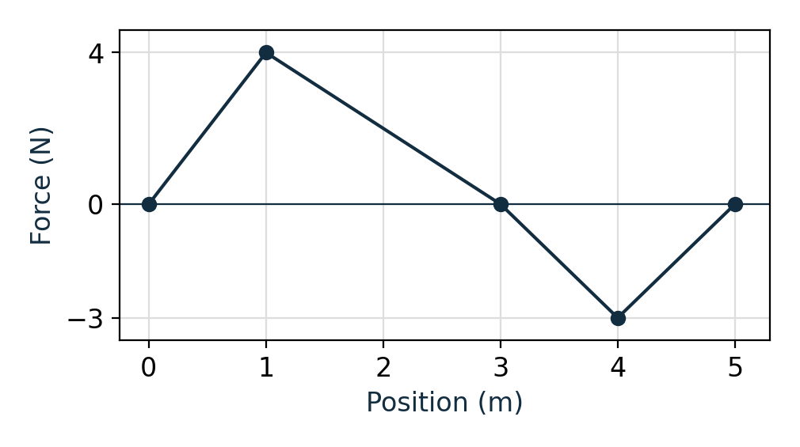
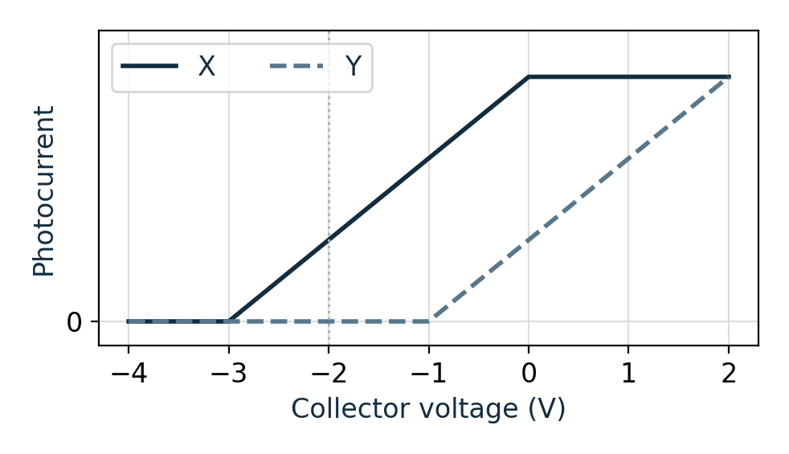
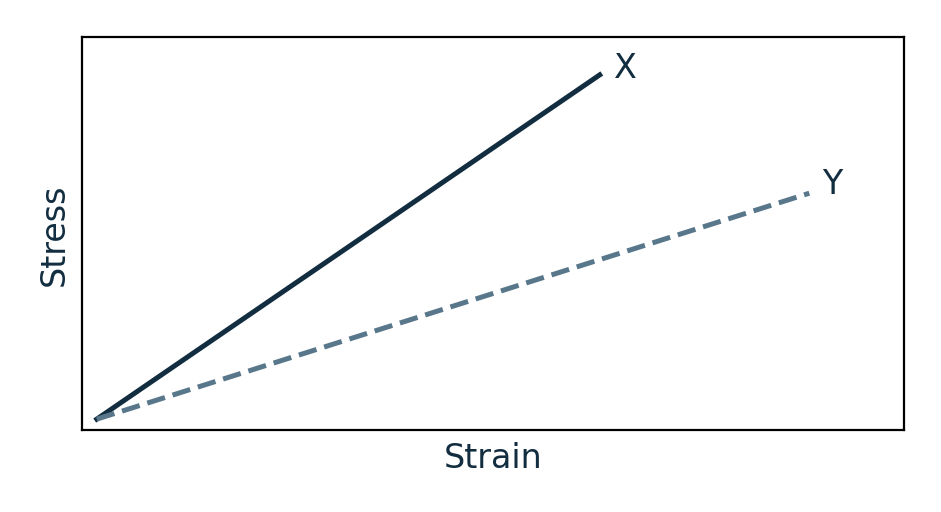
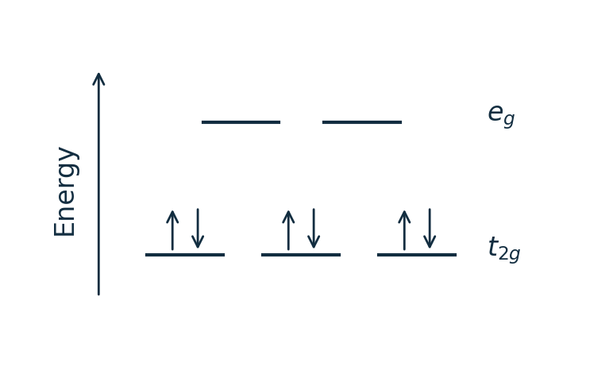
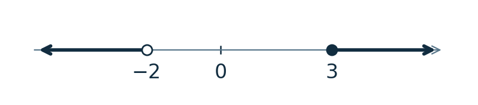
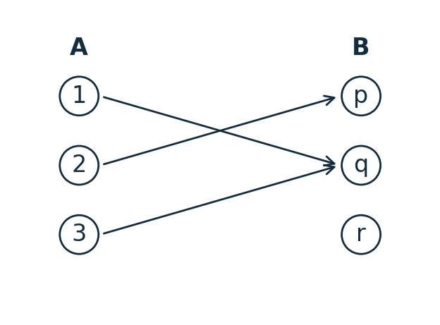
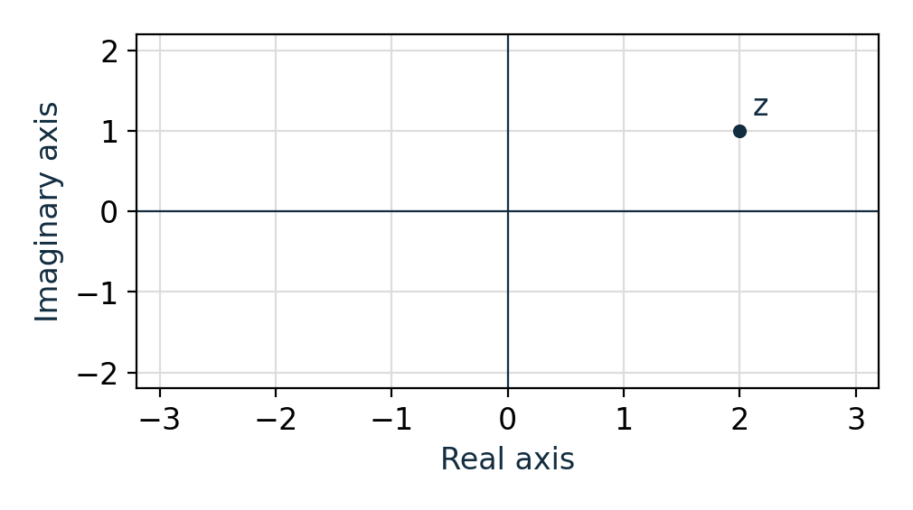
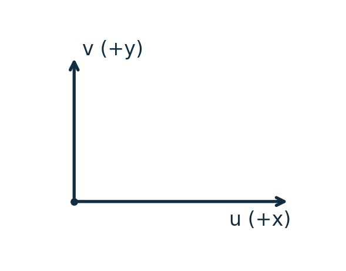

COMEDK UGET Test 21
180 minutes · 180 questions · +1 per correct answer · No negative marking
Physics
Q001. Two reflecting telescopes use identical eyepieces. One objective forms the same distant object's intermediate image twice as tall. What is its angular magnification relative to the other?
A) Twice as large
B) Half as large
C) Four times as large
D) Equal
Worked solution
Answer: (A) Twice as large
Why and working: The same incoming angular size yields image height proportional to objective focal length. The identical eyepieces give an angular magnification ratio of two.
Why not the others: (B) inverts the ratio. (C) squares a linear image factor. (D) the objective focal lengths differ.
Q002. A flow rate is listed as 1.8 L/min. What is it in cm³/s?
A) 30
B) 108
C) 0.03
D) 1800
Worked solution
Answer: (A) 30
Why and working: Convert 1.8 L to 1800 cm³ and divide by 60 s.
Why not the others: (B) multiplies by 60 instead of dividing. (C) omits conversion to cubic centimetres. (D) is a per-minute value.
Q003. Three isolated conducting spheres initially carry charges +2 nC, −6 nC and +9 nC. After contact the first two have equal charges and the third has +1 nC. What is each equal charge?
A) +2 nC
B) +4 nC
C) −2 nC
D) +2.5 nC
Worked solution
Answer: (A) +2 nC
Why and working: Total charge stays +5 nC. The first two share the remaining +4 nC equally.
Why not the others: (B) gives the combined charge. (C) uses the wrong sign. (D) ignores the third sphere's final charge.
Q004. A fixed negative point charge creates potential −24 V at one point. If another point is 3/2 as far away, what is the potential difference final minus initial?
A) −8 V
B) −16 V
C) +8 V
D) +16 V
Worked solution
Answer: (C) +8 V
Why and working: Potential scales as 1/r and changes from −24 V to −16 V. Subtract the initial value to get +8 V.
Why not the others: (A) reverses endpoint order. (B) gives the final value. (D) uses the final magnitude as the difference.
Q005. Two passengers on one straight train walk 3 m east and 7 m west respectively relative to their carriage. In that time the carriage moves 12 m east relative to the ground. What is the first passenger's displacement relative to the second?
A) 4 m west
B) 15 m east
C) 10 m east
D) 5 m east
Worked solution
Answer: (C) 10 m east
Why and working: Take east as positive. Their ground displacements are 15 m and 5 m. Subtracting the second from the first cancels the common carriage motion and gives +10 m.
Why not the others: (A) does not subtract the signed displacements. (B) gives the first ground displacement. (D) gives the second ground displacement.
Q006. Two segments of equal cross-sectional area carry the same steady current. The second contains twice the mobile electron density. What happens to the net number of electrons crossing per second and to drift-speed magnitude?
A) The count rate stays fixed and drift speed halves
B) Both double
C) The count rate halves and drift speed is unchanged
D) Both stay fixed
Worked solution
Answer: (A) The count rate stays fixed and drift speed halves
Why and working: Net charge per second is the same I, so I/e is unchanged. In I=neAv_d doubling n at fixed I halves the drift speed.
Why not the others: (B) the current is unchanged. (C) count rate is fixed by current. (D) the higher density changes the required drift.
Q007. A wire under a compass is moved to twice the distance without changing its DC current. Why can the compass turn closer to its original orientation?
A) Earth's magnetic field is deliberately doubled by moving the wire
B) The compass now measures the wire's electric resistance
C) The wire's magnetic contribution weakens with distance while Earth's contribution stays fixed
D) The wire's magnetic field must reverse when moved farther away on the same radial line
Worked solution
Answer: (C) The wire's magnetic contribution weakens with distance while Earth's contribution stays fixed
Why and working: The long-wire field varies inversely with radial distance, so its influence relative to the terrestrial field decreases.
Why not the others: (A) moving the wire does not change Earth's field. (B) the compass aligns with a magnetic field. (D) distance alone does not reverse the circulation direction.
Q008. A walker goes 3 m north, then 4 m east. Which ordered pair gives distance and displacement magnitude?
A) 5 m and 7 m
B) 7 m and 7 m
C) 5 m and 5 m
D) 7 m and 5 m
Worked solution
Answer: (D) 7 m and 5 m
Why and working: Distance adds the legs. Displacement magnitude uses the norm of perpendicular components, √(3²+4²)=5 m.
Why not the others: (A) reverses the two quantities. (B) ignores the turn when computing displacement. (C) does not use actual path length.
Q009. A tightly wound planar coil is to mimic a bar magnet with magnetic moment magnitude m. Its turn area remains fixed. If one third of its turns are removed, what current factor preserves the moment?
A) 2/3
B) 3
C) 3/2
D) 1
Worked solution
Answer: (C) 3/2
Why and working: The remaining turns number 2N/3. Since m=NIA, the current must multiply by its reciprocal factor 3/2.
Why not the others: (A) uses the turn change directly. (B) mistakes removal of one third for retaining one third. (D) fixed current would reduce the moment.
Q010. A loop's normal rotates from aligned with B to 60° from B as the field magnitude doubles. The area is fixed. What is the endpoint flux change?
A) Zero
B) BA
C) BA/2
D) −BA/2
Worked solution
Answer: (A) Zero
Why and working: Initially Φ=BA. Finally Φ=2BA cos 60°=BA, so the endpoint difference vanishes even if intermediate flux varied.
Why not the others: (B) gives the initial flux rather than the difference. (C) ignores the field change. (D) also ignores the compensating field change.
Q011. A puck moves with steady velocity when two horizontal forces of equal magnitudes act on it. What can be inferred about those two forces if there are no other horizontal forces?
A) They act in the direction of travel together
B) They are perpendicular and give zero net force
C) Each has to be zero individually
D) They act in opposite directions
Worked solution
Answer: (D) They act in opposite directions
Why and working: Constant velocity gives zero acceleration and hence a zero resultant force. Two equal-magnitude forces cancel if opposite.
Why not the others: (A) their sum would be nonzero. (B) nonzero perpendicular forces do not cancel. (C) balanced individual forces can be nonzero.
Q012. A sinusoidal current and a constant 2 A current each produce the same average heat in the same resistance. What is the sinusoid's peak current?
A) 2 A
B) √2 A
C) 2√2 A
D) 4 A
Worked solution
Answer: (C) 2√2 A
Why and working: Heating equivalence makes the rms sinusoidal current 2 A. Its peak is √2 times rms.
Why not the others: (A) gives rms rather than peak. (B) inverts the factor or halves the magnitude. (D) uses factor two instead of √2.
Q013. For one fixed surface the electric flux varies as Φ=a+bt², with b>0. At what positive time is the displacement current twice its value at t=1 s?
A) 4 s
B) √2 s
C) 2 s
D) It never doubles
Worked solution
Answer: (C) 2 s
Why and working: The displacement current is ε₀dΦ/dt=2ε₀bt, so doubling positive time doubles it.
Why not the others: (A) mistakes the derivative for the flux's square relation. (B) uses the t² scaling of flux. (D) the derivative changes with time.
Q014. The force–position graph contains one triangle above the axis and another below it. What is the net work from x=0 to x=5 m?

A) +9 J
B) −3 J
C) +6 J
D) +3 J
Worked solution
Answer: (D) +3 J
Why and working: Read the positive triangle as 3×4/2=6 J and the negative triangle as −2×3/2=−3 J. Add signed areas.
Why not the others: (A) adds magnitudes. (B) reverses the sign of the net area. (C) omits the region below the axis.
Q015. A concave spherical mirror initially images a distant object at its focus. The object is moved to the centre of curvature. How does the magnitude of image distance change?
A) It halves
B) It remains unchanged
C) It doubles
D) It becomes zero
Worked solution
Answer: (C) It doubles
Why and working: A distant object images at f in magnitude. At the centre of curvature the real image is at the same distance 2f.
Why not the others: (A) reverses the distance comparison. (B) different object locations alter image distance. (D) the image stays away from the mirror.
Q016. A train of plane wavefronts crosses a boundary at normal incidence. The second medium has wave speed two thirds of the first. What is the new spacing of adjacent wavefronts?
A) Three halves of the original spacing
B) The original spacing
C) Zero because the fronts reach the boundary together
D) Two thirds of the original spacing
Worked solution
Answer: (D) Two thirds of the original spacing
Why and working: Huygens' construction has each front reach the plane boundary at the same time across its width. Consecutive fronts still arrive one source period T apart; during T the transmitted front travels v₂T, two thirds of v₁T.
Why not the others: (A) inverts the speed comparison. (B) would require unchanged speed at fixed period. (C) simultaneity within one front does not merge successive fronts.
Q017. Two connected trolleys of masses 2m and m move without external horizontal force. The lighter one has velocity +6 m/s and the centre of mass is at rest. What is the heavier one's velocity?
A) −3 m/s
B) −6 m/s
C) +3 m/s
D) +12 m/s
Worked solution
Answer: (A) −3 m/s
Why and working: Zero centre-of-mass velocity gives 2m v+6m=0. Solve v=−3 m/s.
Why not the others: (B) would not cancel the two momenta. (C) both momenta would point the same way. (D) uses the mass factor in the wrong direction.
Q018. For two illumination settings on the same metal, the photocurrent graph shows traces X and Y. At a collector voltage of −2 V, which settings still produce a photocurrent?

A) X only
B) Y only
C) Both X and Y
D) Neither X nor Y
Worked solution
Answer: (A) X only
Why and working: At −2 V, X is above the zero-current axis. Y has already cut off at −1 V and remains zero for more negative collector voltages.
Why not the others: (B) chooses the trace that has already cut off. (C) ignores Y's stopping threshold. (D) ignores the nonzero current on X.
Q019. Why do the rare large-angle alpha deflections in Rutherford scattering become more likely for small rather than large impact parameters?
A) The positive nuclear charge becomes negative at small separation
B) An alpha particle's charge becomes zero near the nucleus
C) A closer path samples stronger Coulomb repulsion from the compact nucleus
D) Electrostatic repulsion is independent of the separation
Worked solution
Answer: (C) A closer path samples stronger Coulomb repulsion from the compact nucleus
Why and working: The Coulomb force grows as separation shrinks, so a close encounter can bend the trajectory much more strongly.
Why not the others: (A) sign of nuclear charge is fixed. (B) alpha charge is retained. (D) the force grows at short distances.
Q020. An inner planet and outer planet have orbital semimajor axes in ratio 1:4. What is their period ratio outer to inner?
A) 4
B) 16
C) 2
D) 8
Worked solution
Answer: (D) 8
Why and working: Kepler's third law gives T proportional to a^(3/2). Applying it to four gives (√4)³=8.
Why not the others: (A) uses a linear radius factor. (B) uses a square factor without taking its square root. (C) uses only the square root of the distance ratio.
Q021. Nuclear radii follow R=r₀A^(1/3). How does the ratio of surface area to volume change when A increases eightfold?
A) It doubles
B) It halves
C) It remains fixed
D) It falls to one eighth
Worked solution
Answer: (B) It halves
Why and working: An eightfold nucleon number doubles radius. Sphere area divided by volume scales as 1/R, so the ratio halves.
Why not the others: (A) uses direct radius scaling. (C) constant average density does not make area-to-volume fixed. (D) uses inverse nucleon count rather than inverse radius.
Q022. An ideal material has an almost empty conduction band and narrow forbidden gap. Why can exposure to suitable light make it conduct better?
A) Photons permanently replace electrons with protons
B) The material loses all spatial periodicity as soon as it absorbs light
C) Photons can promote electrons across the gap, producing mobile electrons and holes
D) Its forbidden gap fills with allowed states without any electron being excited
Worked solution
Answer: (C) Photons can promote electrons across the gap, producing mobile electrons and holes
Why and working: Sufficient photon energy promotes electrons from the valence band into available conduction-band states. Vacancies left behind act as holes.
Why not the others: (A) ordinary absorption changes electronic occupancy. (B) excitation does not require destruction of the lattice. (D) carrier promotion explains ordinary photoconductivity.
Q023. On the stress–strain graph, materials X and Y both remain in their initial linear ranges. Which one has greater Young's modulus?

A) Y, because larger strain at equal stress means a larger modulus
B) X, because its stress rises faster with strain
C) Both are equal since both initial traces are straight
D) The value cannot be compared without specimen lengths
Worked solution
Answer: (B) X, because its stress rises faster with strain
Why and working: Young's modulus is the slope of axial stress versus strain in the proportional region. The X slope is steeper.
Why not the others: (A) larger strain at equal stress implies smaller modulus. (C) linearity does not imply equal slopes. (D) strain already normalises length change.
Q024. Two positive charges q sit at x=−a and x=+a. The right-hand charge is increased to 3q. Which way is the field at their midpoint?
A) Right with twice that magnitude
B) Left with four times that magnitude
C) Zero
D) Left with twice the magnitude of the single-q contribution
Worked solution
Answer: (D) Left with twice the magnitude of the single-q contribution
Why and working: The two contributions oppose. At equal distance the right charge gives 3E left and the left gives E right, leaving 2E left.
Why not the others: (A) the stronger source is on the right and repels a positive test charge leftward. (B) adds magnitudes despite opposing directions. (C) requires equal source strengths.
Q025. Two sources +q and −2q are respectively distance d and 4d from P. What third point charge at distance 2d makes the net potential zero at P?
A) −q
B) +q
C) −2q
D) +2q
Worked solution
Answer: (A) −q
Why and working: The first sources contribute kq/d−2kq/(4d)=kq/(2d). A charge −q at 2d gives the opposite term.
Why not the others: (B) increases the existing positive potential. (C) overcompensates the existing potential. (D) adds a positive contribution.
Q026. Two immiscible liquids form layers. The upper has density ρ and depth h, the lower has density 2ρ and depth h. What is the gauge pressure at the bottom?
A) 2ρgh
B) 4ρgh
C) ρgh
D) 3ρgh
Worked solution
Answer: (D) 3ρgh
Why and working: The bottom bears head from both layers. Add ρgh and 2ρgh.
Why not the others: (A) counts only the lower layer. (B) treats both layers as having density 2ρ. (C) counts only the upper layer.
Q027. Two wires carry the same current and have the same area. Wire X has twice the carrier density and one quarter the mobility of Y. What field ratio E_X/E_Y is necessary?
A) 1/2
B) 2
C) 4
D) 1
Worked solution
Answer: (B) 2
Why and working: Use I=neAμE. The product nμ for X is 2/4 of Y's, so X requires twice the field.
Why not the others: (A) gives the density-mobility product ratio rather than its reciprocal. (C) uses only the mobility change. (D) ignores the net product change.
Q028. A one-turn loop of radius a carries the same current as a one-turn loop of radius 2a. How many extra turns must be added to the wider loop to match the narrower loop’s field at its centre?
A) Two more turns, making three turns
B) None
C) One more turn, making two turns
D) Three more turns, making four turns
Worked solution
Answer: (C) One more turn, making two turns
Why and working: Central field scales as NI/R. With radius doubled and equal I it needs total N=2.
Why not the others: (A) would overcompensate the radius factor. (B) a single wide turn gives half the field. (D) uses the square of the radius scaling.
Q029. Two samples of the same liquid and same mass have temperatures 20°C and 40°C. What does the hotter reading establish before mixing?
A) The hotter sample must contain twice the absolute internal energy
B) The cooler sample cannot transfer any energy microscopically
C) Heat is a fixed amount stored in each sample independently of transfers
D) The direction of initial net heat flow on contact is from the 40°C sample to the 20°C sample
Worked solution
Answer: (D) The direction of initial net heat flow on contact is from the 40°C sample to the 20°C sample
Why and working: Temperature differences determine the direction of net heat flow under thermal contact. Heat is energy in transfer, not a state variable.
Why not the others: (A) Celsius does not set an absolute energy ratio. (B) microscopic transfers can occur in both senses with a net direction. (C) heat describes a transfer.
Q030. An ideal short magnetic dipole is centred at the origin and its moment points north. At a fixed large radius, an axial observation point is moved from directly north of the centre to directly south. Does its field reverse?
A) Yes, it points along the outward radius at each point
B) No, both axial fields point north
C) Yes, it points toward the midpoint at each point
D) No, both axial fields point south
Worked solution
Answer: (B) No, both axial fields point north
Why and working: On either end of the axis the dipole field is parallel to its moment. Outside the south end it points towards the dipole and on the north end it points away, both northwards.
Why not the others: (A) uses position direction in place of field direction. (C) the field points away at the north end. (D) the axial field follows the northward moment.
Q031. Flux linkage in a resistive coil falls uniformly from 0.18 Wb-turn to 0.06 Wb-turn in 0.030 s. With R=8 Ω, what current magnitude is induced?
A) 4.0 A
B) 0.50 A
C) 1.5 A
D) 0.015 A
Worked solution
Answer: (B) 0.50 A
Why and working: The flux-linkage change magnitude is 0.12 Wb-turn. It gives 0.12/0.030=4 V and therefore 4/8=0.50 A.
Why not the others: (A) is the emf rather than current. (C) uses total flux instead of its change consistently. (D) does not divide by the time interval.
Q032. Two systems are separately in equilibrium with a third. If the third is removed and the two touch, what quantity must be equal initially?
A) Their total internal energies
B) Their temperatures
C) Their thermal capacities
D) Their masses
Worked solution
Answer: (B) Their temperatures
Why and working: The zeroth law makes common thermal equilibrium transitive. Equality of temperature does not require equality of extensive variables.
Why not the others: (A) energy depends on the nature and quantity of matter. (C) heat capacity can differ at one temperature. (D) mass is independent of the equality criterion.
Q033. A series RLC circuit with R=6 Ω has net reactance −8 Ω. If the reactive imbalance is removed while the AC source voltage stays fixed, what factor multiplies the current?
A) 5/3
B) 3/5
C) 4/3
D) 1
Worked solution
Answer: (A) 5/3
Why and working: Initially Z=√(6²+8²)=10 Ω. Cancellation leaves Z=6 Ω, giving current ratio 10/6.
Why not the others: (B) inverts the impedance ratio. (C) uses the reactance-to-resistance ratio. (D) electrical impedance changes.
Q034. A plane wave travels out of the page, with electric field along the vertical direction at one instant. What must be true of the magnetic field axis then?
A) It lies in the page and is vertical
B) It lies in the page and is horizontal
C) It is out of the page
D) It lies along propagation but in the opposite sense
Worked solution
Answer: (B) It lies in the page and is horizontal
Why and working: The two fields are mutually perpendicular and each is transverse to propagation. The only remaining axis is horizontal in the page.
Why not the others: (A) would make the fields parallel. (C) is longitudinal. (D) changing sign still leaves a longitudinal direction.
Q035. An ideal gas starts with absolute temperature T and pressure P. After compression its volume is half as large and its temperature is 3T/2. What is the final pressure?
A) 3P/4
B) 2P
C) P/3
D) 3P
Worked solution
Answer: (D) 3P
Why and working: At fixed gas amount, P scales as T/V. The factor is (3/2)/(1/2)=3.
Why not the others: (A) multiplies by volume ratio. (B) ignores the temperature rise. (C) inverts both effects.
Q036. An optical fibre core has refractive index 1.5. At the boundary a ray has sin i=0.80. Which cladding index is just at the critical-angle condition?
A) 1.50
B) 1.875
C) 1.20
D) 0.80
Worked solution
Answer: (C) 1.20
Why and working: The critical condition is n_core sin i=n_cladding, yielding 1.5×0.80=1.20.
Why not the others: (A) uses the core index without the angle factor. (B) divides by the sine. (D) mistakes the sine for outside index.
Q037. A plane wavefront meets a flat mirror obliquely. Two points on the wavefront reach the mirror a time Δt apart. What distance does the first reflected secondary wavelet grow in radius before the second point reaches the mirror?
A) 2vΔt because the beam turns around
B) Zero until the second point also arrives
C) vΔt/2 because half the front is reflected
D) vΔt, where v is the wave speed in the incident medium
Worked solution
Answer: (D) vΔt, where v is the wave speed in the incident medium
Why and working: In Huygens' construction the first point acts as a new source immediately. During Δt the reflected wavelet propagates at v in the same medium, giving radius vΔt.
Why not the others: (A) reversing the path direction does not double propagation speed. (B) the first point does not wait for the rest of the front. (C) partial arrival does not halve the wave speed.
Q038. A waveform completes 3 identical cycles in 0.24 s. What is its fundamental frequency assuming each cycle is fundamental?
A) 4.17 Hz approximately
B) 12.5 Hz
C) 0.08 Hz
D) 8 Hz
Worked solution
Answer: (B) 12.5 Hz
Why and working: Each cycle lasts 0.24/3=0.08 s. Its reciprocal is 12.5 Hz.
Why not the others: (A) uses the full displayed interval as one cycle. (C) is the period with wrong units. (D) inverts an incorrect time value.
Q039. Threshold frequency is ν₀. For incident frequencies 2ν₀ and 3ν₀, what is the ratio of their stopping voltages in that order?
A) 2:3
B) 1:2
C) 1:3
D) 2:1
Worked solution
Answer: (B) 1:2
Why and working: Maximum kinetic energies are h(2ν₀−ν₀) and h(3ν₀−ν₀). The voltages are proportional to these energies.
Why not the others: (A) compares raw frequencies without subtracting threshold. (C) does not subtract threshold from the second. (D) reverses the order.
Q040. In hydrogen an electron moves from an orbit of radius 4a₀ to one of radius 25a₀. What is the change in orbital circumference?
A) 42πa₀
B) 21πa₀
C) 10πa₀
D) 58πa₀
Worked solution
Answer: (A) 42πa₀
Why and working: Circumference is 2πr. The radius increases by 21a₀, giving circumference increase 42πa₀.
Why not the others: (B) omits the factor two. (C) uses the final quantum number as a radius. (D) adds the radii instead of subtracting.
Q041. A pressure disturbance travels through air along the same axis as the molecules' oscillating displacement. Which wave classification follows?
A) Longitudinal
B) Transverse
C) Electromagnetic necessarily
D) A wave with no energy transport
Worked solution
Answer: (A) Longitudinal
Why and working: Motion of particles parallel to propagation describes a longitudinal wave. Alternating pressure changes result.
Why not the others: (B) would require perpendicular particle oscillation. (C) a sound disturbance in air is mechanical. (D) longitudinal waves can transport energy.
Q042. Two reactions release the same total energy. Reaction A yields 7 MeV in radiation and 5 MeV in kinetic energy. B yields 3 MeV in radiation. Ignoring other channels, what is B's kinetic release?
A) 12 MeV
B) 4 MeV
C) 15 MeV
D) 9 MeV
Worked solution
Answer: (D) 9 MeV
Why and working: A releases 7+5=12 MeV total. B releases 12−3=9 MeV kinetically.
Why not the others: (A) gives the entire release. (B) subtracts only the radiation amounts. (C) adds B's radiation instead of subtracting.
Q043. Pure semiconductor X and acceptor-doped sample Y are at the same moderate temperature with dopants ionised. Which observation signals Y's extrinsic character?
A) Its thermal generation produces unequal electron–hole pairs
B) Its hole concentration exceeds its mobile electron concentration
C) Its lattice has no fixed charged dopant sites
D) Its holes vanish entirely
Worked solution
Answer: (B) Its hole concentration exceeds its mobile electron concentration
Why and working: Acceptor doping leaves a hole excess along with compensating ionised acceptors. Thermal generation itself still creates pairs.
Why not the others: (A) each generated pair adds one of each. (C) ionised acceptors supply fixed negative charge. (D) holes are majority carriers.
Q044. Which combination of SI base units is equivalent to electrical resistance?
A) kg·m·s⁻²·A⁻¹
B) kg·m²·s⁻³·A⁻²
C) kg·m²·s⁻²·A⁻¹
D) kg·m²·s⁻³·A²
Worked solution
Answer: (B) kg·m²·s⁻³·A⁻²
Why and working: Use R=V/I=P/I². Power has base units kg·m²·s⁻³, and divide by amperes squared.
Why not the others: (A) uses force per current. (C) uses energy per current. (D) multiplies instead of dividing by current squared.
Q045. A uniform ring has total charge Q. It is cut into arcs of 120° and 240° retaining their original charge densities. What charge belongs to the longer arc?
A) Q/3
B) 4Q/9
C) 2Q/3
D) Q
Worked solution
Answer: (C) 2Q/3
Why and working: Uniform linear density makes charge proportional to arc length, hence to central angle. The fraction is 240/360.
Why not the others: (A) gives the shorter arc's charge. (B) squares the length fraction. (D) both arcs share the charge.
Q046. In a uniform electric field directed east, a positive charge moves 4 m due north, then 3 m due west. Which leg crosses equipotential lines and increases the charge's potential energy?
A) Only the northward leg
B) Both legs
C) Only the westward leg
D) Neither leg
Worked solution
Answer: (C) Only the westward leg
Why and working: Equipotential lines in the horizontal plane run north–south. The northward leg stays on one line. Walking west goes against the eastward field toward greater potential, so U=qV increases for positive q.
Why not the others: (A) northward displacement has zero component along the field. (B) the two displacements have different projections. (D) moving west changes the electric potential.
Q047. A cyclist goes from x=0 to x=8 m in 2 s, then to x=12 m in 2 s. Can its motion have been uniform over all four seconds?
A) Yes, the positions all lie on one line
B) Yes, because the final position is positive
C) No, equal durations give different displacements
D) No, because uniform motion must always be motion at rest
Worked solution
Answer: (C) No, equal durations give different displacements
Why and working: The two interval velocities averaged over each interval are 4 m/s and 2 m/s. A single constant velocity would give equal displacements in equal times.
Why not the others: (A) straight motion may be nonuniform. (B) position sign does not fix velocity. (D) uniform motion can have nonzero velocity.
Q048. A component reads I=1 A at V=2 V and I=3 A at V=4 V. Can one constant resistance relate both operating points by V=RI?
A) Yes, the common value is 1 Ω
B) No, the two static resistance values differ
C) Yes, the common value is 2 Ω
D) Yes, because current and voltage both increase
Worked solution
Answer: (B) No, the two static resistance values differ
Why and working: The ratios V/I are 2 Ω and 4/3 Ω, so one constant R cannot fit both readings.
Why not the others: (A) one ohm is the interval slope ΔV/ΔI. (C) two ohms fits only the first point. (D) increasing quantities need not be proportional.
Q049. A circular Amperian path has signed circulation μ₀I. The current I is reversed and the path traversal is likewise reversed. What is the new signed circulation?
A) It becomes −μ₀I
B) It remains μ₀I
C) It doubles
D) It vanishes
Worked solution
Answer: (B) It remains μ₀I
Why and working: Reversing current negates B and reversing orientation negates dl. Their scalar-product signs cancel in the circulation.
Why not the others: (A) accounts for only one reversal. (C) no magnitude factor changes. (D) both quantities have finite magnitudes.
Q050. An object starts at x=−3 m and has a displacement of +8 m. It then has displacement −6 m. What is its final position?
A) +2 m
B) −1 m
C) +11 m
D) −17 m
Worked solution
Answer: (B) −1 m
Why and working: The final position is initial position plus both signed displacements: −3+8−6=−1 m.
Why not the others: (A) gives displacement rather than final coordinate. (C) treats the second displacement as positive. (D) treats both changes as leftward.
Q051. A magnetic dipole's moment is perpendicular to a uniform field. If the moment is rotated 30° toward alignment with unchanged strength, what factor multiplies the torque magnitude?
A) 1/2
B) 1
C) 2/√3
D) √3/2
Worked solution
Answer: (D) √3/2
Why and working: The new angle to B is 60°. Torque scales with sin θ, so its ratio to the perpendicular value is sin 60°.
Why not the others: (A) uses the angle turned instead of remaining angle. (B) torque is no longer maximal. (C) inverts the resulting sine ratio.
Q052. A conducting loop is pulled entirely out of a region whose field passes through it toward the viewer. While the flux magnitude falls, what direction is the induced field through the loop?
A) Away from the viewer
B) Always tangent to the loop's plane
C) Toward the viewer
D) Zero for the entire removal
Worked solution
Answer: (C) Toward the viewer
Why and working: By Lenz's law the induced contribution opposes the loss of flux by reinforcing its original direction.
Why not the others: (A) would reinforce the loss. (B) a normal field is needed to oppose the flux change. (D) removing the loop changes its linkage.
Q053. A 2 kg cart's momentum changes from 4 kg·m/s east to 2 kg·m/s west in 3 s. What is its average force?
A) 2 N east
B) 2/3 N west
C) 6 N west
D) 2 N west
Worked solution
Answer: (D) 2 N west
Why and working: Taking east positive, Δp=−2−4=−6 kg·m/s. Divide by 3 s to get −2 N.
Why not the others: (A) reverses signed direction. (B) ignores that momentum reverses. (C) gives impulse magnitude rather than force.
Q054. In a series LCR circuit a voltmeter reads 8 V rms across the resistor, 5 V across the inductor and 11 V across the capacitor. What is the source-voltage magnitude?
A) 14 V
B) 24 V
C) 8 V
D) 10 V
Worked solution
Answer: (D) 10 V
Why and working: The reactive phasors oppose, leaving 6 V perpendicular to the 8 V resistor voltage. Their resultant is √(8²+6²)=10 V.
Why not the others: (A) adds perpendicular terms as scalars. (B) adds all magnitudes. (C) drops the nonzero reactive difference.
Q055. Which wavelength band is commonly used for satellite links and lies between radio broadcasts at low frequency and infrared in wavelength order?
A) Microwaves
B) X-rays
C) Gamma rays
D) Ultraviolet
Worked solution
Answer: (A) Microwaves
Why and working: Microwaves have shorter wavelengths than conventional lower-frequency radio transmissions and longer wavelengths than infrared.
Why not the others: (B) lies beyond ultraviolet at much shorter wavelength. (C) has still shorter wavelengths. (D) lies on the short-wavelength side of visible light.
Q056. A block of mass m is accelerated from speed v to 3v. How much net work has been done, in terms of its initial kinetic energy K?
A) 8K
B) 9K
C) 3K
D) 2K
Worked solution
Answer: (A) 8K
Why and working: The final energy is 9K and the work–energy theorem gives its increase, 9K−K.
Why not the others: (B) gives the final energy rather than change. (C) uses speed scaling rather than squared speed. (D) uses the speed gain directly.
Q057. Why can a nearly axial ray remain guided after many fibre reflections if the cladding index is low enough?
A) The oblique wall encounters can all exceed the critical incidence angle measured from the wall normal
B) Each encounter must bring incidence exactly to zero
C) The core and cladding must have equal refractive index
D) Guidance requires absorption at every boundary
Worked solution
Answer: (A) The oblique wall encounters can all exceed the critical incidence angle measured from the wall normal
Why and working: A near-axial ray meets the wall at a large angle to its normal. With suitable index contrast it is totally internally reflected repeatedly.
Why not the others: (B) small incidence to the normal does not support TIR. (C) equal indices remove the guiding contrast. (D) preserving the ray does not require boundary absorption.
Q058. At a point illuminated by two waves of equal intensity I, a phase controller keeps them in phase for half of each measurement and in opposite phase for the other half. What is the measured mean intensity there?
A) 4I
B) Zero
C) I
D) 2I
Worked solution
Answer: (D) 2I
Why and working: In phase the amplitudes add, giving four times the single-wave intensity. In opposite phase they cancel. Equal time weights give (4I+0)/2=2I, so this detector averages away the contrast between the two states.
Why not the others: (A) gives only the in-phase value. (B) gives only the out-of-phase value. (C) uses the intensity of one source.
Q059. A uniform rod of length L and mass M has a point mass M attached one quarter of the way from its left end. Where is the combined centre of mass?
A) 3L/8 from the left end
B) L/2 from the left end
C) L/4 from the left end
D) 3L/4 from the left end
Worked solution
Answer: (A) 3L/8 from the left end
Why and working: The rod's weight acts at L/2. For the two equal masses average L/2 and L/4 to obtain 3L/8.
Why not the others: (B) ignores the attachment. (C) uses the point mass position alone. (D) adds both positions without averaging.
Q060. Two light pulses carry the same total energy. One has three times the photon frequency of the other. What is its photon count relative to the lower-frequency pulse?
A) Three times
B) One third
C) One ninth
D) Equal
Worked solution
Answer: (B) One third
Why and working: Each photon costs energy hν. At fixed pulse energy, tripling energy per photon divides the count by three.
Why not the others: (A) inverts the count relation. (C) squares the frequency factor. (D) fixed total energy does not require fixed photon count.
Chemistry
Q061. An 80 g solution contains 12 g of solute. Water evaporates until the solution mass is 60 g, with no solute loss. What is the increase in solute mass percentage?
A) 5 percentage points
B) 15 percentage points
C) 20 percentage points
D) 33 percentage points
Worked solution
Answer: (A) 5 percentage points
Why and working: Initially the mass percentage is 100×12/80=15%. After evaporation it is 100×12/60=20%, an increase of five percentage points.
Why not the others: (B) gives the original mass percentage. (C) gives the final mass percentage. (D) approximates the relative percentage increase, not percentage points.
Q062. Which quantum-number pair can describe an orbital in the n=3 shell?
A) l=3, m_l=0
B) l=2, m_l=−2
C) l=1, m_l=2
D) l=0, m_l=1
Worked solution
Answer: (B) l=2, m_l=−2
Why and working: Here l can be 0,1 or 2 and m_l lies from −l to +l. Only the first pair meets both bounds.
Why not the others: (A) l must be less than n. (C) m_l cannot exceed l. (D) an s orbital has m_l=0.
Q063. A standard galvanic cell uses reduction couples A²⁺/A and B²⁺/B, with the latter 0.40 V higher. What is the net redox direction?
A) B metal oxidises and A²⁺ reduces
B) A metal oxidises and B²⁺ reduces
C) Both metals reduce to ions
D) Both ions oxidise to metals
Worked solution
Answer: (B) A metal oxidises and B²⁺ reduces
Why and working: The higher reduction potential identifies B²⁺ as the species gaining electrons. Metallic A releases them.
Why not the others: (A) reverses the spontaneous cell direction. (C) metal-to-cation formation is oxidation. (D) cation-to-metal conversion is reduction.
Q064. A reactant's concentration changes from 0.60 to 0.30 M in 10 s. At the midpoint in time the tangent slope is −0.05 M/s. What is instantaneous disappearance rate divided by interval average?
A) 3/5
B) 1
C) 5/3
D) 5
Worked solution
Answer: (C) 5/3
Why and working: The average magnitude is 0.30/10=0.03 M/s. The tangent magnitude divided by it gives 0.05/0.03.
Why not the others: (A) inverts rates. (B) the stated tangent and average differ. (D) compares against the wrong denominator.
Q065. In a carbon atom using sp² hybrid orbitals, how many unhybridised p orbitals remain within its valence s,p set?
A) Two
B) Zero
C) Three
D) One
Worked solution
Answer: (D) One
Why and working: Mixing one s and two of the three p orbitals makes three sp² hybrids. The third p orbital remains available for π overlap.
Why not the others: (A) would describe sp hybridisation. (B) would describe use of all three p orbitals. (C) would count the p orbitals already used.
Q066. For neutral manganese [Ar]3d⁵4s², which configuration follows for Mn²⁺ by removal of the ordinary outer electrons?
A) [Ar]3d³4s²
B) [Ar]3d⁴4s¹
C) [Ar]3d⁵
D) [Ar]3d⁷
Worked solution
Answer: (C) [Ar]3d⁵
Why and working: The two 4s electrons are lost before 3d electrons in forming this cation, preserving the half-filled 3d set.
Why not the others: (A) removes both from 3d first. (B) removes one from each subshell. (D) oxidation does not add d electrons.
Q067. A metal binds one bidentate ligand and three monodentate ligands. What is its coordination number?
A) Five
B) Four
C) Six
D) Three
Worked solution
Answer: (A) Five
Why and working: Count attached donor atoms, not ligand molecules. There are 2+3=5 donor positions.
Why not the others: (B) counts only ligand molecules. (C) overcounts the denticity. (D) counts only the monodentate donors.
Q068. For one element, converting 1 mol of solid atoms to gas atoms takes 90 kJ and the first ionisation of those gas atoms takes 410 kJ. What enthalpy is required for the combined route to gas cations from the solid?
A) 500 kJ
B) 320 kJ
C) −500 kJ
D) 410 kJ
Worked solution
Answer: (A) 500 kJ
Why and working: Sublimation and first ionisation are sequential endothermic steps. Hess's law adds the 90 and 410 kJ inputs.
Why not the others: (B) subtracts the sublimation cost. (C) uses the reverse sign of the route. (D) omits the phase change.
Q069. Where does bromine attach in 1-bromo-2-methylpropane?
A) To the central carbon bearing three methyl groups
B) Directly to an aromatic carbon
C) To a terminal CH₂ carbon adjacent to a carbon bearing two methyl groups
D) To the middle carbon of an unbranched butane chain
Worked solution
Answer: (C) To a terminal CH₂ carbon adjacent to a carbon bearing two methyl groups
Why and working: The parent is propane with bromo at C1 and methyl at C2. The structure is BrCH₂CH(CH₃)₂.
Why not the others: (A) would be 2-bromo-2-methylpropane. (B) there is no aromatic ring. (D) the chain is branched.
Q070. Which reduction gives butan-2-ol while keeping its carbon framework?
A) Reduction of butanal
B) Reduction of but-1-ene without introducing oxygen
C) Reduction of butan-2-one
D) Reduction of propanone
Worked solution
Answer: (C) Reduction of butan-2-one
Why and working: Ketone reduction changes the carbonyl at position two to CHOH and retains four carbons.
Why not the others: (A) gives butan-1-ol. (B) cannot introduce the OH group by hydrogenation alone. (D) has only three carbons.
Q071. For saturated M(OH)₂, which expression is the solubility product in terms of free ion concentrations?
A) [M²⁺][OH⁻]²
B) [M²⁺]²[OH⁻]
C) [M²⁺]+2[OH⁻]
D) [M²⁺][OH⁻]
Worked solution
Answer: (A) [M²⁺][OH⁻]²
Why and working: One formula unit releases one M²⁺ and two OH⁻. Mass-action exponents follow those coefficients, while solid activity is constant.
Why not the others: (B) swaps the exponents. (C) uses a sum rather than an equilibrium product. (D) omits the hydroxide exponent.
Q072. The name 3-methylbutanal specifies an aldehyde group and its carbon skeleton. Which condensed structure matches?
A) CH₃CH₂CH(CH₃)CHO
B) CH₃COCH(CH₃)CH₃
C) CH₃CH(CH₃)CH₂CHO
D) CH₃CH₂CH₂CHO
Worked solution
Answer: (C) CH₃CH(CH₃)CH₂CHO
Why and working: Number from the CHO carbon at C1. The methyl is two positions farther along the main chain at C3.
Why not the others: (A) places methyl at C2. (B) is a ketone. (D) has no methyl branch.
Q073. Which amine has a methyl substituent on nitrogen and a propyl group as its other carbon group?
A) N-Methylpropan-1-amine
B) 2-Methylpropan-1-amine
C) Butan-1-amine
D) N,N-Dimethylethanamine
Worked solution
Answer: (A) N-Methylpropan-1-amine
Why and working: The N prefix places methyl on nitrogen. Propan-1-amine supplies the other N-bound group, propyl.
Why not the others: (B) places methyl on carbon rather than nitrogen. (C) has one four-carbon group on nitrogen. (D) has three carbon groups on nitrogen.
Q074. Which species is represented by a carbon with three single bonds and an empty valence orbital in the standard planar approximation?
A) A carbocation
B) A carbanion with a lone pair
C) A carbon radical with one odd electron
D) A closed-shell carbon with four bonds
Worked solution
Answer: (A) A carbocation
Why and working: Three bonds supply six electrons around carbon. With no nonbonding electron in the remaining orbital, the carbon is electron deficient and positively charged.
Why not the others: (B) its relevant orbital contains a lone pair. (C) its relevant orbital has a single electron. (D) the stated species has only three bonds.
Q075. A pentose has a terminal CHO group in its open-chain representation. What classification combines both facts?
A) Ketohexose
B) Ketopentose
C) Aldohexose
D) Aldopentose
Worked solution
Answer: (D) Aldopentose
Why and working: Pentose means five carbons, and the terminal CHO makes it an aldose.
Why not the others: (A) both carbon count and group differ. (B) the stated group is an aldehyde. (C) hexose requires six carbons.
Q076. A gas obeys p=K_Hx. Tank A has K_H=50 bar and gas pressure 1 bar. In tank B K_H becomes 100 bar. What pressure keeps the same dissolved mole fraction?
A) 0.5 bar
B) 1 bar
C) 4 bar
D) 2 bar
Worked solution
Answer: (D) 2 bar
Why and working: Tank A has x=1/50. Holding x fixed while doubling K_H requires p=100/50=2 bar.
Why not the others: (A) halves pressure instead of doubling it. (B) would lower the dissolved mole fraction. (C) would double the dissolved mole fraction.
Q077. For propene, why does ordinary addition of HBr without peroxide favour attachment of Br to the middle carbon?
A) A primary carbocation at the terminal carbon is always more stable
B) Proton addition favours formation of the more stable secondary carbocation at the middle carbon
C) Peroxide-derived bromine radicals control the stated conditions
D) Bromide attacks the proton before any C–H bond forms
Worked solution
Answer: (B) Proton addition favours formation of the more stable secondary carbocation at the middle carbon
Why and working: Protonation at the terminal carbon leaves a secondary carbocation, which bromide attacks to give 2-bromopropane.
Why not the others: (A) reverses carbocation stability. (C) the mechanism here is ionic. (D) does not account for alkene protonation and cation formation.
Q078. A cell's reaction quotient Q is multiplied by 100 at 298 K. Its balanced reaction transfers two electrons. What is the change E_new−E_old using 0.059 V as the Nernst coefficient?
A) +0.059 V
B) −0.059 V
C) −0.118 V
D) −0.0295 V
Worked solution
Answer: (B) −0.059 V
Why and working: Subtract the two Nernst equations to cancel E°. The change is −(0.059/2) log₁₀(100)=−0.059 V.
Why not the others: (A) uses the reverse sign. (C) omits division by electron count. (D) uses one decade instead of two.
Q079. A reaction's concentration and catalyst are unchanged, while temperature rises slightly. Which link best explains its faster observed rate?
A) Activation energy becomes negative by definition
B) A larger fraction of encounters has sufficient energy to react
C) Concentrations must have increased because temperature increased
D) The rate constant cannot change unless products change
Worked solution
Answer: (B) A larger fraction of encounters has sufficient energy to react
Why and working: The kinetic energy distribution shifts with temperature, raising the energetic fraction that can surmount the barrier.
Why not the others: (A) higher T need not alter the barrier itself. (C) concentration was held fixed. (D) rate constants depend on temperature.
Q080. Which standard d orbital has two lobes on the z-axis and an equatorial torus?
A) d_xy
B) d_(x²−y²)
C) d_(z²)
D) p_z
Worked solution
Answer: (C) d_(z²)
Why and working: The angular form of d_(z²) has two axial lobes and opposite-sign density in a toroidal region around the middle.
Why not the others: (A) has four lobes in the xy plane. (B) its four lobes point along x and y. (D) has two axial lobes but no torus.
Q081. Why does the first transition series generally include elements with strong metallic cohesion?
A) None of the valence electrons participate outside isolated atoms
B) All solids in the series are composed of independent noble-gas molecules
C) Both s and d valence electrons can contribute to bonding in the solid
D) The elements have no attraction between neighbouring atoms
Worked solution
Answer: (C) Both s and d valence electrons can contribute to bonding in the solid
Why and working: Shared valence states provide the metallic bonds and can include d as well as s character.
Why not the others: (A) metallic bonding uses valence electrons. (B) the solids are metallic lattices. (D) their cohesion is due to bonding.
Q082. The orbital diagram gives the d-electron filling for an octahedral complex. Which response follows from that filling?

A) Diamagnetic because no d electrons are unpaired
B) Paramagnetic because the six d electrons are necessarily all unpaired
C) Paramagnetic because the empty orbitals count as unpaired electrons
D) Ferromagnetic solely because the diagram has two energy levels
Worked solution
Answer: (A) Diamagnetic because no d electrons are unpaired
Why and working: Each of the three populated t₂g orbitals has an up/down pair, and both e_g orbitals are empty. There is no unpaired electron in this filling.
Why not the others: (B) six electrons need not remain unpaired. (C) an empty orbital contains no electron. (D) splitting alone gives no ferromagnetic ordering.
Q083. Neutral N₂ has its highest occupied valence molecular orbital bonding, and its lowest unoccupied valence molecular orbital antibonding. Which statement correctly compares N₂⁺ and N₂⁻ in this model?
A) Both have bond order 2.5
B) Only N₂⁺ has bond order below 3
C) Only N₂⁻ has bond order below 3
D) Both have bond order 3.5
Worked solution
Answer: (A) Both have bond order 2.5
Why and working: N₂ has bond order 3. Removing a bonding electron or adding an antibonding electron each lowers the order by one half, so both ions have order 2.5.
Why not the others: (B) adding to an antibonding orbital also lowers bond order. (C) removing a bonding electron also lowers bond order. (D) both changes lower the bonding excess.
Q084. Which reaction coordinate feature is expected for ordinary SN1 solvolysis of a suitable tertiary alkyl halide?
A) One concerted backside-attack step with no ionic intermediate
B) An obligatory free chlorine radical preceding every ionic step
C) A carbocation intermediate after the leaving group departs
D) Two nucleophiles attacking the same saturated carbon simultaneously
Worked solution
Answer: (C) A carbocation intermediate after the leaving group departs
Why and working: The unimolecular step is ionisation of the substrate. The nucleophile reacts with the resulting carbocation in a subsequent step.
Why not the others: (A) describes SN2. (B) standard SN1 is not radical chain chemistry. (D) one nucleophile captures the cation.
Q085. Why can the initial oxidation product of propan-1-ol be converted further into a carboxylic acid without changing the number of carbons?
A) The first product is propanone, which always gives a three-carbon acid directly
B) The initial aldehyde retains an oxidisable formyl group
C) Oxidation removes the hydroxyl carbon from the chain immediately
D) The product no longer contains oxygen
Worked solution
Answer: (B) The initial aldehyde retains an oxidisable formyl group
Why and working: Propan-1-ol first becomes propanal. Further oxidation of the aldehyde gives propanoic acid with its carbon skeleton intact.
Why not the others: (A) propanone is the usual oxidation product of propan-2-ol. (C) the aldehyde retains that carbon. (D) the carbonyl already contains oxygen.
Q086. From crystalline salt, making a concentrated solution releases 12 kJ/mol. Diluting that solution to a stated concentration absorbs 3 kJ/mol. What is the enthalpy of dissolution directly to that final concentration?
A) −15 kJ/mol
B) +9 kJ/mol
C) +15 kJ/mol
D) −9 kJ/mol
Worked solution
Answer: (D) −9 kJ/mol
Why and working: Dissolution is −12 and dilution is +3. They connect the same starting and final states as the direct route, so add the signed changes.
Why not the others: (A) treats the dilution as another release. (B) reverses the combined sign. (C) uses the sum of magnitudes with wrong sign.
Q087. Which treatment converts benzoyl chloride to benzaldehyde without using a reagent intended to take the carbonyl all the way to an alcohol?
A) Aqueous sodium hydroxide followed by acidification
B) Hydrogen with palladium on barium sulfate under Rosenmund conditions
C) Ammonia, then heating the isolated product
D) Excess lithium aluminium hydride followed by workup
Worked solution
Answer: (B) Hydrogen with palladium on barium sulfate under Rosenmund conditions
Why and working: Controlled Rosenmund reduction converts an acyl chloride to an aldehyde. The poisoned palladium catalyst limits further reduction under the stated conditions.
Why not the others: (A) hydrolysis followed by acidification gives benzoic acid. (C) ammonia leads to the amide. (D) excess strong hydride can produce benzyl alcohol.
Q088. An unlabeled nitrile gives CH₃CH₂CH₂NH₂ after complete reduction. Which condensed formula identifies the nitrile?
A) CH₃CN
B) CH₃CH₂CH₂CN
C) CH₃CH₂CN
D) CH₃CH(NH₂)CH₃
Worked solution
Answer: (C) CH₃CH₂CN
Why and working: Reduction converts the nitrile carbon into the terminal CH₂ bonded to NH₂. A three-carbon primary amine therefore comes from a nitrile with two carbons before CN.
Why not the others: (A) would give a two-carbon amine. (B) would give a four-carbon amine. (D) is an amine rather than a nitrile.
Q089. In cyanide addition to an aldehyde, which participant is the nucleophile and why?
A) The carbonyl carbon, because it accepts a pair from cyanide
B) H⁺, because it has an empty orbital
C) CN⁻, because it donates an electron pair to electrophilic carbon
D) Both carbon centres are nucleophiles because both are carbon
Worked solution
Answer: (C) CN⁻, because it donates an electron pair to electrophilic carbon
Why and working: The cyanide ion supplies a lone pair as it attacks the partially positive carbonyl carbon.
Why not the others: (A) that describes the electrophile. (B) an electron-pair acceptor is not the nucleophile. (D) roles follow availability and demand for electron density.
Q090. An open-chain sugar has its reference stereocentre's OH on the left in the usual Fischer orientation. A polarimeter gives positive rotation. Which combination is consistent?
A) L and dextrorotatory
B) L and levorotatory by necessity
C) D and dextrorotatory by necessity
D) D and levorotatory
Worked solution
Answer: (A) L and dextrorotatory
Why and working: Left at the reference centre gives L; positive measured rotation gives the independent descriptor dextrorotatory.
Why not the others: (B) L does not force rotation sign. (C) positive rotation does not determine D/L. (D) both descriptors oppose the stated information.
Q091. Which material can be a substitutional solid solution rather than merely a mechanical mixture?
A) Two distinct solid lumps placed together
B) A suspension of solid particles in liquid
C) A single pure element with no second component
D) One metal distributed atomically on sites of another metal in a single uniform phase
Worked solution
Answer: (D) One metal distributed atomically on sites of another metal in a single uniform phase
Why and working: Substitutional mixing places solute atoms on host lattice sites while retaining one solid phase.
Why not the others: (A) the phases remain separate. (B) does not produce a homogeneous solid phase. (C) a solution requires more than one component here.
Q092. Reductive ozonolysis yields only ethanal, twice per molecule of an unknown alkene. Which parent structure fits?
A) But-1-ene
B) 2-Methylpropene
C) Ethene
D) But-2-ene
Worked solution
Answer: (D) But-2-ene
Why and working: Each alkene carbon must carry one H and one methyl to form ethanal. Putting them together gives CH₃CH=CHCH₃.
Why not the others: (A) would yield unequal fragments including methanal. (B) would give methanal and a ketone. (C) would give methanal only.
Q093. A cell reaction has ΔG°=−96 kJ/mol of reaction and transfers one electron. With F=96 kC/mol, what is its standard emf?
A) −1.0 V
B) +96 V
C) Zero
D) +1.0 V
Worked solution
Answer: (D) +1.0 V
Why and working: Use E°=−ΔG°/(nF). Dividing 96 kJ by 96 kC yields one volt.
Why not the others: (A) omits the minus sign in the relation. (B) does not normalise charge correctly. (C) negative Gibbs change implies positive voltage.
Q094. A measured rate doubles whenever reactant concentration doubles, but the reaction is known to occur in multiple elementary steps. What follows about order and overall molecularity?
A) First order and necessarily one molecule participates in every elementary step
B) First order in that reactant, with no overall molecularity assigned to the multistep reaction
C) Second order because concentration was doubled
D) Molecularity two because a rate comparison used two trials
Worked solution
Answer: (B) First order in that reactant, with no overall molecularity assigned to the multistep reaction
Why and working: Proportional rate gives exponent one for the tested reactant. Molecularity characterises a specified elementary event only.
Why not the others: (A) empirical exponent does not determine all microscopic steps. (C) doubling concentration is not evidence of exponent two. (D) trial count is unrelated.
Q095. Why is 2p³ usually represented with one electron in each orbital before pairing?
A) Pauli exclusion requires each orbital to hold exactly two electrons initially
B) An s orbital empties completely whenever any p orbitals are present
C) Three electrons can all enter a single spatial orbital with different energies
D) Hund's rule favours parallel singly occupied orbitals within a degenerate subshell
Worked solution
Answer: (D) Hund's rule favours parallel singly occupied orbitals within a degenerate subshell
Why and working: Occupying the three degenerate orbitals singly maximises parallel spins before pairing. Pauli also excludes three electrons from one orbital.
Why not the others: (A) does not require premature pairing. (B) lower s states can remain occupied. (C) there are only two allowed spin occupations per orbital.
Q096. Which same-element cation is generally smaller in a comparable environment, Fe²⁺ or Fe³⁺?
A) Fe²⁺, because formal charge never affects size
B) They are identical because nuclear charges match
C) Fe³⁺, with fewer electrons attracted to the same nucleus
D) Fe³⁺, because it gains a nuclear proton on oxidation
Worked solution
Answer: (C) Fe³⁺, with fewer electrons attracted to the same nucleus
Why and working: Oxidation removes an electron without changing Z. Lower screening and repulsion generally decrease size for Fe³⁺.
Why not the others: (A) ionic electron count matters. (B) matching Z does not imply matching distributions. (D) chemical ionisation does not change proton count.
Q097. What is the modern name of [Ni(CN)₄]²⁻?
A) Tetracyanidonickel(II)
B) Tetracyanidonickelate(II)
C) Tetracyanidonickelate(IV)
D) Dicyanidonickelate(II)
Worked solution
Answer: (B) Tetracyanidonickelate(II)
Why and working: Four cyanido ligands contribute −4 and total charge is −2, giving Ni(II). The anionic complex requires the nickelate ending.
Why not the others: (A) omits the anionic metal ending. (C) miscomputes the oxidation state. (D) there are four coordinated cyanido groups.
Q098. Two liquids have similar molar masses, but one contains O–H donor bonds and shows a much higher boiling point. Which interaction can explain the extra energy needed for vaporisation?
A) Permanent proton transfer creating new atomic numbers
B) Intermolecular hydrogen bonding in the liquid
C) Covalent bonds necessarily breaking within every molecule
D) The absence of intermolecular attraction in the higher-boiling liquid
Worked solution
Answer: (B) Intermolecular hydrogen bonding in the liquid
Why and working: Hydrogen bonds between molecules add cohesion requiring energy to separate them into vapour.
Why not the others: (A) does not alter nuclei. (C) vaporisation ordinarily preserves the molecules. (D) stronger rather than absent attractions raise boiling point.
Q099. At fixed temperature and wavelength, an enantiomer gives +8° in a 1 dm tube at concentration c. Which new setup gives the same rotation under linear conditions?
A) A 0.5 dm tube at concentration c/2
B) A 2 dm tube at concentration 2c
C) A 1 dm tube containing the opposite enantiomer at concentration c
D) A 0.5 dm tube at concentration 2c
Worked solution
Answer: (D) A 0.5 dm tube at concentration 2c
Why and working: For the same enantiomer, rotation scales with concentration times path length. The proposed changes 2c and 0.5 dm keep the product fixed.
Why not the others: (A) the product becomes one quarter of the original. (B) the product becomes four times the original. (C) the rotation changes sign.
Q100. Which alcohol can give a ketone on oxidation without breaking a carbon–carbon bond?
A) A secondary alcohol with one H on its OH-bearing carbon
B) A primary alcohol with two H on that carbon
C) A tertiary alcohol with no H on that carbon
D) A simple ether with no OH group
Worked solution
Answer: (A) A secondary alcohol with one H on its OH-bearing carbon
Why and working: Removal of H from the secondary carbon and from OH gives C=O at an internal carbon. A ketone retains two carbon groups at that site.
Why not the others: (B) normally gives an aldehyde first. (C) lacks the necessary C–H on that centre. (D) does not supply the ordinary alcohol oxidation group.
Q101. What does the third law assign to a perfect crystal with a unique ground state as its temperature tends to absolute zero?
A) Its entropy necessarily tends to infinity
B) Entropy approaches zero
C) Its enthalpy must equal one joule per mole
D) Its internal energy must be negative infinity
Worked solution
Answer: (B) Entropy approaches zero
Why and working: A unique accessible ground state leads to zero residual entropy for the ideal perfect crystal.
Why not the others: (A) the ground state does not have unlimited thermal multiplicity. (C) the third law sets an entropy reference. (D) does not require unbounded internal energy.
Q102. Two isomeric compounds are an ordinary aldehyde and an ordinary ketone. Which test often distinguishes the aldehyde by forming a silver coating?
A) Tollens' test
B) A generic boiling test with water only
C) A neutral sodium chloride test
D) An ordinary litmus colour change necessarily
Worked solution
Answer: (A) Tollens' test
Why and working: Aldehydes can reduce aqueous silver reagent while being oxidised to carboxylate. Simple ketones typically do not under these conditions.
Why not the others: (B) boiling does not supply a selective silver reagent. (C) sodium chloride supplies no comparable oxidation test. (D) neither group implies the stipulated acid response.
Q103. When ethylamine is treated with equal moles of strong acid, what change happens at nitrogen?
A) It becomes an amide without a carbonyl reagent
B) It gives off elemental nitrogen immediately
C) Its lone pair remains nonbonding while a proton attaches to the carbon chain
D) It is protonated to give ethylammonium
Worked solution
Answer: (D) It is protonated to give ethylammonium
Why and working: The nitrogen lone pair binds H⁺, giving CH₃CH₂NH₃⁺.
Why not the others: (A) acid does not introduce the acyl group. (B) a simple protonation retains N in the molecule. (C) the main basic site is nitrogen.
Q104. A reaction converts an alcohol into an alkene by loss of water from one molecule. Which reaction class applies?
A) Addition
B) Substitution
C) Hydrolysis
D) Elimination
Worked solution
Answer: (D) Elimination
Why and working: Loss of groups from adjacent carbons produces a new π bond. This is elimination rather than replacement at one centre.
Why not the others: (A) addition consumes rather than introduces that unsaturation in the ordinary comparison. (B) no incoming group replaces the water at one centre. (C) water is lost rather than used to cleave bonds.
Q105. Fresh sucrose does not reduce Fehling's solution. Why can its acid hydrolysate give a reducing response after neutralisation?
A) Hydrolysis consumes all hydroxyl groups to form a nonpolar compound
B) Neutralisation reforms the original sucrose linkage completely
C) Hydrolysis frees monosaccharides that can generate reducing open-chain species
D) Acid hydrolysis converts its glycosidic oxygens into metal atoms
Worked solution
Answer: (C) Hydrolysis frees monosaccharides that can generate reducing open-chain species
Why and working: The sucrose linkage ties up both anomeric carbons. Hydrolysis releases glucose and fructose, which can give a reducing response under the alkaline test conditions.
Why not the others: (A) oxygenated sugars remain. (B) neutralisation does not reform the bond. (D) hydrolysis is a chemical transformation of the linkage.
Q106. In an ideal binary solution, pure A and pure B have vapour pressures 90 and 30 kPa. If the total pressure is 45 kPa, what is x_A in the liquid?
A) 3/4
B) 1/4
C) 1/2
D) 1/6
Worked solution
Answer: (B) 1/4
Why and working: Raoult's law gives 45=90x_A+30(1−x_A). Hence 60x_A=15.
Why not the others: (A) gives the mole fraction of B. (C) divides total pressure by pure A while omitting B. (D) uses 90 rather than the pressure difference.
Q107. How many carbon atoms are in the longest chain containing the triple bond of HC≡C–CH(CH₃)–CH₂–CH₃?
A) Five
B) Four
C) Six
D) Three
Worked solution
Answer: (A) Five
Why and working: Following the path through the terminal alkyne and the longer ethyl branch gives five carbons, with one methyl substituent left off the parent chain.
Why not the others: (B) follows the shorter methyl route. (C) counts both branches in one continuous chain. (D) ends the path too early.
Q108. Two electrolyte solutions both have κ=0.0040 S/cm. At the measurement, one sample has half the molarity of the other. How do their molar conductivities compare?
A) Their values must equal each other
B) The more dilute sample's is half as large
C) The more dilute sample's is four times as large
D) The more dilute sample's is twice as large
Worked solution
Answer: (D) The more dilute sample's is twice as large
Why and working: With c in mol/L, Λₘ=1000κ/c. At the stated same conductivity κ, halving c doubles Λₘ.
Why not the others: (A) confuses equal specific conductivity with equal molar conductivity. (B) uses direct instead of inverse proportionality. (C) squares the concentration factor.
Q109. A reaction follows rate=k[A]²[B]. At the same temperature, an experiment reports an initial rate eight times larger after [A] doubles and [B] is unchanged. What ratio of inferred k values would those two measurements give?
A) 2
B) 1
C) 4
D) 8
Worked solution
Answer: (A) 2
Why and working: The concentration factor alone is 2²=4. Divide the reported rate ratio 8 by 4 to obtain an inferred constant ratio of 2, exposing inconsistency at fixed conditions.
Why not the others: (B) would predict a fourfold rate increase. (C) gives the concentration factor. (D) ignores the change in concentration.
Q110. What accounts for the usual ground configuration [Ar]3d¹⁰4s¹ of neutral Cu?
A) The configurations are close in energy and a filled d subshell is favoured in this case
B) The 3d subshell can hold only nine electrons
C) Copper has fewer than 18 total electrons
D) The 4s subshell is forced to contain three electrons for stability
Worked solution
Answer: (A) The configurations are close in energy and a filled d subshell is favoured in this case
Why and working: The observed ground occupation has a closed d shell and one s electron. The simple one-by-one filling diagram alone does not capture the detailed energies.
Why not the others: (B) five d orbitals hold ten. (C) argon core already has 18 electrons. (D) one s orbital permits two at most.
Q111. A vanadium oxide catalyst speeds up conversion of SO₂ to SO₃. If it cycles between two oxidation states during turnover, what must happen for the cycle to remain catalytic?
A) All vanadium must be used up as a product in each turnover
B) The catalyst must shift the equilibrium composition toward SO₃
C) The catalyst must remove oxygen from every final product permanently
D) The original oxidation state must be restored later in the cycle
Worked solution
Answer: (D) The original oxidation state must be restored later in the cycle
Why and working: A transition-metal catalyst can transfer electron density in intermediate steps. Returning to its initial state lets it carry out repeated turnovers with no net consumption.
Why not the others: (A) describes a reagent rather than a catalyst. (B) catalysts change rate without changing the equilibrium constant. (C) oxygen must remain in SO₃ in the overall oxidation.
Q112. Two coordination compounds release different amounts of chloride into water despite having equal total chloride per formula unit. In Werner's picture, where are the chlorides that are promptly detected as free chloride?
A) Directly bound as inner-sphere ligands only
B) Outside the coordination sphere
C) In the central metal nucleus
D) In the uncharged lattice water molecules
Worked solution
Answer: (B) Outside the coordination sphere
Why and working: Outer-sphere chlorides serve as counterions. They can dissociate on dissolution, whereas coordinated chlorides are attached to the metal and need not be liberated immediately.
Why not the others: (A) counts bound ligand as already free chloride. (C) the nucleus cannot contain chloride ions. (D) water ligands are chemically distinct from chloride.
Q113. At constant pressure a process has ΔH=−20 kJ/mol and ΔS=−100 J/(mol·K). Which temperature makes ΔG exactly zero if both remain constant?
A) 20 K
B) 2000 K
C) It cannot be zero at any positive T
D) 200 K
Worked solution
Answer: (D) 200 K
Why and working: Convert entropy to −0.100 kJ/(mol·K). Setting −20−T(−0.100)=0 gives 200 K.
Why not the others: (A) ignores the converted magnitude. (B) misplaces a decimal. (C) the two contributions have opposite signs at positive T.
Q114. Chlorobenzene is much less reactive than chloroethane in ordinary SN2 substitution. Which geometric point adds to the effect of its stronger C–Cl bond?
A) The usual backside path to the bonded aryl carbon is obstructed by the ring framework
B) The ring carbon is a freely rotating sp³ centre
C) The attacking nucleophile must hit a hydrogen nucleus first
D) Chlorobenzene places chlorine at the end of a side-chain methyl group
Worked solution
Answer: (A) The usual backside path to the bonded aryl carbon is obstructed by the ring framework
Why and working: SN2 requires approach opposite the C–Cl bond. The ring geometry blocks ordinary backside approach at the aryl sp² carbon, which also has a shorter bond with partial multiple-bond character.
Why not the others: (B) the reacting ring carbon is sp². (C) nucleophilic substitution is not initiated at a hydrogen nucleus. (D) chlorine is directly attached to the ring.
Q115. Consider acid-catalysed dehydration of 2-butanol. From which neighbouring carbon is a proton removed to give but-2-ene, when the carbon originally bonded to OH is numbered 2?
A) Carbon 1
B) Carbon 3
C) Carbon 2
D) Carbon 4
Worked solution
Answer: (B) Carbon 3
Why and working: After activation and loss of water, the double bond includes carbon 2. Removing a β-hydrogen from carbon 3 forms C2=C3. Loss on carbon 1 would form C1=C2 instead.
Why not the others: (A) would give but-1-ene. (C) is the α carbon, not the neighbouring carbon required. (D) is not directly adjacent to carbon 2.
Q116. Why is a terminal alkyne more acidic at its acetylenic hydrogen than an alkene is at a vinylic hydrogen?
A) The terminal alkyne has no C–H bonds
B) The alkene's carbon necessarily has higher s character than sp carbon
C) The acetylide holds its negative charge in an orbital with more s character
D) Removing H⁺ from an alkyne breaks every carbon–carbon bond
Worked solution
Answer: (C) The acetylide holds its negative charge in an orbital with more s character
Why and working: The conjugate base has negative electron density in an sp orbital, which has 50% s character and holds it closer to carbon.
Why not the others: (A) the terminal H is part of a C–H bond. (B) sp has greater s character than sp². (D) deprotonation retains the carbon skeleton.
Q117. After a negative nucleophile adds to a neutral aldehyde and the π bond opens, how is the resulting alkoxide converted to an alcohol in a typical aqueous completion?
A) Loss of oxygen as a free atom
B) Removal of a proton from the already negative oxygen
C) Formation of a second carbonyl bond without changing any other bond
D) Proton transfer to the negatively charged oxygen
Worked solution
Answer: (D) Proton transfer to the negatively charged oxygen
Why and working: The oxygen bears a lone-pair negative charge after addition. It takes a proton from a donor, giving neutral OH.
Why not the others: (A) the original O remains in the product. (B) the alkoxide needs a proton rather than loss of one. (C) that does not yield the stated alcohol.
Q118. Which compound has two alkyl groups and one H directly bonded to N?
A) Ethylamine
B) Triethylamine
C) Diethylamine
D) Acetamide
Worked solution
Answer: (C) Diethylamine
Why and working: Diethylamine has the form (C₂H₅)₂NH and is secondary. Its two ethyl groups are attached directly to N.
Why not the others: (A) has one ethyl group. (B) has three ethyl groups and no N–H bond. (D) belongs to the amide class.
Q119. Which structural condition lets all six p orbitals overlap continuously around the benzene ring?
A) One ring carbon is tetrahedral and lacks a p orbital
B) Each ring carbon is approximately planar and sp² hybridised, with perpendicular p orbitals parallel to each other
C) The six p orbitals point tangentially along the C–C bonds
D) Each carbon p orbital is perpendicular to its two neighbours' p orbitals
Worked solution
Answer: (B) Each ring carbon is approximately planar and sp² hybridised, with perpendicular p orbitals parallel to each other
Why and working: The sp² framework leaves a p orbital normal to the ring plane on each carbon. Parallel neighbours overlap sideways throughout the cyclic π system.
Why not the others: (A) breaks the continuous p system. (C) confuses p orbital orientation with the sigma framework. (D) perpendicular neighbours would not provide the required parallel overlap.
Q120. A glucose polymer gives an intense blue iodine test and contains a chiefly linear α(1→4)-linked component. Which component accounts for that response?
A) Cellulose
B) Lactose
C) Amylose
D) A peptide backbone
Worked solution
Answer: (C) Amylose
Why and working: Amylose forms a helical structure that can host polyiodide, producing the characteristic blue colour.
Why not the others: (A) its β-linked chains do not provide the same amylose helix. (B) it is a two-sugar molecule rather than the helical polymer. (D) peptides are made from amino acids.
Mathematics
Q121. Given adj A=3I for a real invertible 2×2 matrix A, what is A?
A) 3I
B) I/3
C) 9I
D) I
Worked solution
Answer: (A) 3I
Why and working: The adjugate of rows (a,b),(c,d) has rows (d,−b),(−c,a). Equating to 3I gives a=d=3 and b=c=0.
Why not the others: (B) confuses taking an adjugate with inversion. (C) squares an already specified diagonal value. (D) would have adjugate I.
Q122. A unit-circle point has coordinates (−8/17,−15/17). What is the sign of tan θ for its standard angle θ?
A) Positive
B) Negative
C) Zero
D) Undefined
Worked solution
Answer: (A) Positive
Why and working: Tangent is the y coordinate divided by the nonzero x coordinate. Both are negative so their ratio is positive.
Why not the others: (B) uses one sign only. (C) the numerator is nonzero. (D) the denominator is nonzero.
Q123. At (1,1) on y³+xy=2, what is the derivative of x with respect to y along the curve?
A) −1/4
B) −4
C) 4
D) −3
Worked solution
Answer: (B) −4
Why and working: Differentiate with y as the independent variable: 3y²+x+y(dx/dy)=0. Substituting (1,1) gives 4+dx/dy=0.
Why not the others: (A) gives dy/dx instead. (C) drops the negative sign. (D) misses the derivative of the y factor of xy.
Q124. At a stationary point x=0, f″(0)=0. Which example demonstrates that a strict local maximum can still occur?
A) f(x)=x⁴
B) f(x)=x³
C) f(x)=0 for every x
D) f(x)=−x⁴
Worked solution
Answer: (D) f(x)=−x⁴
Why and working: For −x⁴ the first two derivatives vanish at zero, while every nearby nonzero value is negative. Thus zero is a strict local maximum.
Why not the others: (A) gives a minimum instead. (B) has positive and negative values around zero. (C) a constant function has no strict local maximum.
Q125. Given z=1−2i, which value is z²+4z?
A) 1+12i
B) 7−12i
C) 1−12i
D) 5−8i
Worked solution
Answer: (C) 1−12i
Why and working: First z²=−3−4i and 4z=4−8i. Adding gives 1−12i.
Why not the others: (A) reverses the imaginary sign. (B) uses i²=+1 in squaring. (D) does not add both complex contributions.
Q126. For x>0, which equality follows by taking ln x as the factor to differentiate when integrating x² ln x by parts?
A) ∫x² ln x dx=(x³/3)ln x−x³/9+C
B) ∫x² ln x dx=(x³/3)ln x−x²/6+C
C) ∫x² ln x dx=x³ ln x−x³/3+C
D) ∫x² ln x dx=(x³/3)ln x+x³/9+C
Worked solution
Answer: (A) ∫x² ln x dx=(x³/3)ln x−x³/9+C
Why and working: Choose u=ln x and dv=x²dx so du=dx/x and v=x³/3. The subtracted term is (1/3)∫x²dx=x³/9.
Why not the others: (B) reduces the remaining power too far. (C) omits the first factor one third. (D) uses addition in the parts formula.
Q127. An ellipse with semiaxes a and b is rescaled by multiplying its horizontal distances by 2 and dividing its vertical distances by 2. What happens to the area?
A) It stays the same
B) It doubles
C) It halves
D) It becomes four times larger
Worked solution
Answer: (A) It stays the same
Why and working: If a is the horizontal semiaxis and b is vertical, the new product is (2a)(b/2)=ab. The ellipse area πab consequently stays fixed.
Why not the others: (B) includes the horizontal stretch alone. (C) includes the vertical compression alone. (D) would follow from doubling both semiaxes.
Q128. Which inequality matches the diagram showing a left ray starting at an open dot and a right ray starting at a filled dot?

A) x≤−2 or x>3
B) −2<x<3
C) x<−2 or x≥3
D) −2≤x≤3
Worked solution
Answer: (C) x<−2 or x≥3
Why and working: The left endpoint is −2 and is excluded. The right endpoint is 3 and is included, with the two exterior rays retained.
Why not the others: (A) switches the endpoint inclusions. (B) selects the gap instead of the rays. (D) selects the gap and both endpoints.
Q129. For x>0 a solution of y′=1+y/x satisfies y(1)=0. What is y(e)?
A) 1
B) e²
C) Zero
D) e
Worked solution
Answer: (D) e
Why and working: Use y=vx, so v+xv′=1+v and v′=1/x. Hence v=ln x after the initial condition; y(e)=e ln e=e.
Why not the others: (A) gives v(e) without the factor x. (B) uses x² rather than x times its log. (C) the transformed variable increases from zero.
Q130. The midpoint of AB has position vector m. If A has vector m+v, what position vector belongs to B?
A) −m−v
B) 2m+v
C) m−v
D) m+2v
Worked solution
Answer: (C) m−v
Why and working: The sum of endpoint vectors is 2m. Subtract m+v from that total.
Why not the others: (A) negates the midpoint too. (B) fails to subtract the first endpoint. (D) moves both endpoints to the same side of the midpoint.
Q131. Seven different cards are available. How many ordered selections of four cards have one specified card first and a second specified card last?
A) 42
B) 120
C) 10
D) 20
Worked solution
Answer: (D) 20
Why and working: Fixing the two positions leaves two ordered positions chosen from five cards. There are 5×4=20 choices.
Why not the others: (A) does not remove both fixed cards from the available pool. (B) arranges three of the five rather than two. (C) uses unordered pairs.
Q132. An infinite line lies in the plane z=1, and a second infinite line lies in z=6. Their projections to the xy-plane meet at a single point. What is their shortest separation?
A) 0
B) 6
C) It cannot be found without the projection angle
D) 5
Worked solution
Answer: (D) 5
Why and working: All joining segments span at least the fixed vertical difference 5. At the common projected point, a vertical segment between the two lines attains that lower bound.
Why not the others: (A) the lines still have distinct z coordinates. (B) uses the upper plane's coordinate. (C) the shared projected point supplies a vertical connector for any crossing angle.
Q133. A feasible region in the first quadrant contains the full ray y=1, x≥2. Can 3x−y have a finite maximum there?
A) Yes, its largest value is 5 at the start of the ray
B) No, the value increases without bound along that ray
C) Yes, every unbounded region has a finite maximum
D) No, because the objective is undefined on the ray
Worked solution
Answer: (B) No, the value increases without bound along that ray
Why and working: On that feasible ray the objective is 3x−1. Its values grow without bound as x grows.
Why not the others: (A) 5 is only the value at x=2. (C) unboundedness alone does not determine the objective; this ray proves growth. (D) the linear expression is defined for every real x,y.
Q134. Two equal adjacent entries of Pascal's triangle add to 70 in the next row. What is each of these parent entries?
A) 70
B) 140
C) 35
D) 7
Worked solution
Answer: (C) 35
Why and working: A child entry is the sum of its two adjacent parents. Equal parents each contribute 70/2.
Why not the others: (A) gives the child value. (B) doubles rather than halves. (D) does not satisfy the sum.
Q135. A test item is drawn from chapters A, B and C with probabilities 0.25, 0.25 and 0.50. Correct-answer probabilities for those chapters are 0.8, 0.4 and 0.6. What overall correct rate follows?
A) 0.60
B) 0.50
C) 0.70
D) 0.40
Worked solution
Answer: (A) 0.60
Why and working: Total probability gives 0.25×0.8+0.25×0.4+0.50×0.6=0.20+0.10+0.30.
Why not the others: (B) misses one of the weighted terms. (C) overweights the highest conditional rate. (D) gives the complement of the correct rate.
Q136. If matrices X and Y have the same order and 3X−Y=2X+2Y, what relation follows?
A) X=3Y
B) X=Y
C) X=−Y
D) X=2Y
Worked solution
Answer: (A) X=3Y
Why and working: Move 2X to the left and −Y to the right, giving X=2Y+Y.
Why not the others: (B) omits the original subtracted Y. (C) uses both signs incorrectly. (D) forgets one Y term.
Q137. A group of eight scores has mean 10. After dropping one score, the mean of the remaining seven is 9. What score was removed?
A) 17
B) 10
C) 9
D) 1
Worked solution
Answer: (A) 17
Why and working: The total decreases from 80 to 63. Their difference is the removed score, 17.
Why not the others: (B) gives the old mean. (C) gives the new mean. (D) uses the change in means rather than totals.
Q138. The equations x+y=3 and 2x+2y=6 are both kept. Which added equation leaves infinitely many common solutions?
A) x−y=0
B) 3x+3y=6
C) x=0
D) 3x+3y=9
Worked solution
Answer: (D) 3x+3y=9
Why and working: The first two express the same line. Multiplying the first by three adds no new restriction, so there are still infinitely many points.
Why not the others: (A) selects just one point on the line. (B) is parallel and incompatible. (C) fixes one coordinate and therefore the other.
Q139. Find the derivative of eˣ/(1+eˣ).
A) eˣ/(1+eˣ)
B) eˣ/(1+eˣ)²
C) 1/(1+eˣ)²
D) −eˣ/(1+eˣ)²
Worked solution
Answer: (B) eˣ/(1+eˣ)²
Why and working: The quotient rule gives eˣ(1+eˣ)−e²ˣ in the numerator. Simplifying leaves eˣ.
Why not the others: (A) fails to square the denominator. (C) drops the factor eˣ. (D) reverses the quotient-rule order.
Q140. For a line through (2,−3), its point-slope form becomes y+3=0(x−2). Which second point belongs to that line?
A) (2,4)
B) (−3,−4)
C) (4,2)
D) (−4,−3)
Worked solution
Answer: (D) (−4,−3)
Why and working: A zero slope fixes y at −3 for every x. The first pair has this ordinate.
Why not the others: (A) the y coordinate is wrong even though x=2. (B) interchanges the proposed coordinates. (C) does not satisfy y+3=0.
Q141. A rectangle has width x and length 12−2x with both lengths positive. What is the largest area possible?
A) 36
B) 18
C) 24
D) 12
Worked solution
Answer: (B) 18
Why and working: Area is 12x−2x² on 0<x<6. Its derivative changes from positive to negative at x=3, giving 36−18=18.
Why not the others: (A) does not subtract the quadratic cost. (C) is above the quadratic's maximum. (D) is the coefficient of the linear term.
Q142. What is ∫₀² dx/(x²+4)?
A) π/8
B) π/4
C) π/2
D) 1/2
Worked solution
Answer: (A) π/8
Why and working: The primitive is (1/2)arctan(x/2). At x=2 it is (1/2)(π/4), and it is zero at x=0.
Why not the others: (B) omits the one-half scale factor. (C) uses the infinite-limit angle without the scale factor. (D) does not evaluate arctan.
Q143. For a circle centred on the line y=3 and passing through (0,0) and (4,0), what is its radius squared?
A) 9
B) 13
C) 25
D) 4
Worked solution
Answer: (B) 13
Why and working: The centre is on the perpendicular bisector x=2 and on y=3. From (2,3) to (0,0), the squared distance is 2²+3²=13.
Why not the others: (A) uses only the vertical displacement. (C) uses the chord length in place of half the chord. (D) uses only the horizontal displacement.
Q144. Let x as a function of y satisfy dx/dy+x=y with x(0)=2. What is x(1)?
A) 1/e
B) 2/e
C) 1+3/e
D) 3/e
Worked solution
Answer: (D) 3/e
Why and working: A particular solution is y−1. Add Ce^(−y), and x(0)=2 fixes C=3. At y=1 the particular term vanishes.
Why not the others: (A) uses the wrong initial constant. (B) ignores the −1 in the particular solution when finding C. (C) does not subtract one when evaluating at y=1.
Q145. For three-component vectors a and b, suppose 2a−b=(1,4,−2) and a=(2,1,3). What is the y component of b?
A) 2
B) 4
C) 6
D) −2
Worked solution
Answer: (D) −2
Why and working: The y component equation is 2×1−b_y=4, so b_y=−2.
Why not the others: (A) reverses the subtraction. (B) gives the y component of the difference. (C) adds it instead of isolating b_y.
Q146. A and B lie on the same vertical axis line with coordinates (2,−1,3) and (2,−1,k). Their distance is four. Which k values work?
A) 3 or 7
B) ±4
C) 7 only
D) −1 or 7
Worked solution
Answer: (D) −1 or 7
Why and working: Only z differs. The distance is the absolute difference of k and 3, which is 4. Solve k=3±4.
Why not the others: (A) includes the coincident value. (B) ignores the starting coordinate. (C) omits the opposite displacement.
Q147. Two intersecting lines have slopes 2 and −1/2. What is the smaller angle between them?
A) 90°
B) 45°
C) 60°
D) 30°
Worked solution
Answer: (A) 90°
Why and working: Direction vectors may be taken as (1,2) and (2,−1). Their dot product is zero, so they are perpendicular.
Why not the others: (B) the direction vectors have zero rather than positive dot product. (C) cosine is zero rather than one half. (D) cosine is zero rather than √3/2.
Q148. A polygon's feasible vertices are (0,0), (4,0), (4,3) and (0,5). For which of the following objectives do the last two vertices give the same maximum?
A) 2x+y
B) x+y
C) −x−2y
D) x+2y
Worked solution
Answer: (D) x+2y
Why and working: For x+2y the last corners give 10 each, exceeding 0 and 4 at the others. Linearity gives the maximum throughout the joining edge.
Why not the others: (A) gives 11 and 5 at the two corners. (B) gives 7 and 5. (C) ties the last two at a minimum instead.
Q149. Let f(x)=(x²+3x−4)/(x−1) for x≠1. Which value at x=1 makes the extension continuous?
A) 5
B) 0
C) 4
D) 3
Worked solution
Answer: (A) 5
Why and working: The numerator factors as (x−1)(x+4). The expression thus tends to one plus four.
Why not the others: (B) the original quotient is indeterminate there. (C) gives only the constant in the reduced expression. (D) copies the middle coefficient.
Q150. A report is drafted by X with probability 0.6 and Y otherwise. X's reports need correction with probability 0.1, and Y's with probability 0.3. Given that a report needs no correction, how likely is it from X?
A) 9/10
B) 27/41
C) 3/5
D) 14/41
Worked solution
Answer: (B) 27/41
Why and working: The uncorrected contributions are 0.6×0.9=0.54 and 0.4×0.7=0.28. Normalising the first gives 0.54/0.82=27/41.
Why not the others: (A) gives the conditional likelihood rather than the posterior. (C) uses the prior alone. (D) gives the posterior for Y.
Q151. Let D be diagonal with entries (2,3). For a 2×2 matrix B, which entry of DB equals three times the corresponding entry of B regardless of its value?
A) Entry (1,1)
B) Entry (1,2)
C) Entry (2,1)
D) Every entry
Worked solution
Answer: (C) Entry (2,1)
Why and working: Left multiplication by D scales row one by two and row two by three. Entry (2,1) is in the second row.
Why not the others: (A) is in the first row. (B) is also in the first row. (D) the first row scales differently.
Q152. A frequency table has mean 6 and mean deviation about the mean 2. Every measured value x is replaced by 20−3x and every frequency is unchanged. What is the new mean deviation about the new mean?
A) 2
B) 6
C) 12
D) −6
Worked solution
Answer: (B) 6
Why and working: The mean transforms to 20−3×6=2. Each transformed residual equals −3 times its old residual. Absolute values triple, so their weighted average rises from 2 to 6.
Why not the others: (A) gives the transformed mean. (C) scales the spread by six instead of three. (D) keeps a minus sign after taking absolute values.
Q153. Using the inverse method, solve 2x+y=8 and x+y=5.
A) (3,2)
B) (2,3)
C) (8,5)
D) (−3,2)
Worked solution
Answer: (A) (3,2)
Why and working: The coefficient determinant is 1 and its inverse has rows (1,−1),(−1,2). Multiplying by (8,5)ᵀ gives (3,2)ᵀ.
Why not the others: (B) reverses the components. (C) copies the right side. (D) subtracts in the wrong order for x.
Q154. For x>0 and y=(x²+3)^(2x), what is y′/y?
A) 2 ln(x²+3)+2x/(x²+3)
B) 4x²/(x²+3)
C) 2x ln(x²+3)
D) 2 ln(x²+3)+4x²/(x²+3)
Worked solution
Answer: (D) 2 ln(x²+3)+4x²/(x²+3)
Why and working: Take logarithms to get ln y=2x ln(x²+3). Both factors vary, giving terms from the derivative of 2x and from the derivative of the logarithm.
Why not the others: (A) omits one inner x-dependent factor. (B) drops the derivative of the exponent. (C) gives the log of y rather than its derivative.
Q155. From a set of 40 outcomes, A contains 18, B contains 17 and exactly 8 belong to both. How many outcomes belong to neither?
A) 5
B) 8
C) 13
D) 27
Worked solution
Answer: (C) 13
Why and working: Inclusion–exclusion gives 18+17−8=27 in A∪B. The complement of that union has 40−27=13 outcomes.
Why not the others: (A) subtracts both set counts without undoing overlap. (B) gives the intersection count. (D) gives the union count.
Q156. Which antiderivative applies to 1/√(9−4x²) on the interval −3/2<x<3/2?
A) arcsin(2x/3)+C
B) ½ arcsin(x/3)+C
C) ½ arcsin(2x/3)+C
D) ⅔ arcsin(2x/3)+C
Worked solution
Answer: (C) ½ arcsin(2x/3)+C
Why and working: Set u=2x/3. Then dx=(3/2)du and the root is 3√(1−u²), leaving ½∫du/√(1−u²).
Why not the others: (A) drops the factor one half. (B) omits the inside scale of two. (D) is too large by a factor of four thirds.
Q157. A solution of y′+y=4 has initial value y(0)=6. What is its limit as x tends to positive infinity?
A) 6
B) 4
C) Zero
D) Infinity
Worked solution
Answer: (B) 4
Why and working: The solution is 4+Ce^(−x), with C=2. The exponential decays to zero, leaving the constant particular solution.
Why not the others: (A) gives the initial value. (C) drops the nonzero forced component. (D) the homogeneous mode decays rather than grows.
Q158. Every point in a Venn diagram represents an element of U. Which part of the diagram contains x if x∈A∪(U minus B)?
A) Only the overlap A∩B
B) Only the points outside A and outside B
C) All of A together with all points outside B
D) All of B together with all points outside A
Worked solution
Answer: (C) All of A together with all points outside B
Why and working: Membership in a union requires at least one condition. The expression accepts every point of A and also every point of U outside B, excluding only B minus A.
Why not the others: (A) omits A-only points and points outside both sets. (B) omits every point of A. (D) interchanges the roles of A and B.
Q159. A=(0,2,4) and B=(6,8,−2). Point P lies inside AB and has y=6. What is AP:PB?
A) 1:2
B) 2:1
C) 3:1
D) 1:1
Worked solution
Answer: (B) 2:1
Why and working: As we travel A to B the y coordinate rises from 2 to 8. At P it has risen 4 and has 2 left, so the corresponding lengths are in proportion 4:2.
Why not the others: (A) takes the segments in reverse order. (C) treats the target coordinate as the travelled difference. (D) the midpoint has y=5.
Q160. If AB=0 while BA is nonzero for real 2×2 matrices, why must A be singular?
A) An inverse of A would force B=0 on multiplying AB=0 on the left
B) Nonzero BA implies every column of A is zero
C) All real matrices with two rows are singular
D) The zero product implies A and B are both identity matrices
Worked solution
Answer: (A) An inverse of A would force B=0 on multiplying AB=0 on the left
Why and working: If A were invertible, left multiplying by A⁻¹ would give B=0, contradicting BA≠0.
Why not the others: (B) would also make BA zero. (C) many order-two matrices are invertible. (D) identity multiplication cannot give zero between identities.
Q161. How many new distinct arrows can be added to the relation shown while keeping both its domain and its range exactly as they are?

A) 6
B) 3
C) 1
D) 0
Worked solution
Answer: (B) 3
Why and working: The domain already contains 1, 2 and 3. The range contains p and q only, giving 3×2=6 allowable pairs. Three are already drawn, so three can be added.
Why not the others: (A) counts existing pairs as new ones. (C) there is one unused admissible target per source. (D) the definition of a relation allows two targets for a source.
Q162. A curve has x=cos t and y=sin(2t). What is its tangent slope at t=π/2?
A) −2
B) Zero
C) 2
D) Undefined
Worked solution
Answer: (C) 2
Why and working: Here dx/dt=−sin t=−1 and dy/dt=2 cos(2t)=−2. Dividing gives 2.
Why not the others: (A) drops the negative x derivative. (B) cos π is −1, not zero. (D) the x derivative is nonzero.
Q163. Which numerator makes (a x+3)/√(x²+6x+13) an odd function about x=−3, so that its integral from −5 to −1 is zero by symmetry?
A) 2x+3
B) x+3
C) −x+3
D) 3
Worked solution
Answer: (B) x+3
Why and working: Write x=t−3. The denominator becomes √(t²+4), which is even. The numerator becomes at+3−3a; it is odd only for a=1, and the t-limits are −2 and 2.
Why not the others: (A) leaves a constant term of −3 in the shifted variable. (C) leaves a constant term of 6. (D) is even about the centre.
Q164. If cos θ=−2/3 and θ is in quadrant III, what is 1+tan²θ?
A) 5/4
B) 4/9
C) 9/4
D) −3/2
Worked solution
Answer: (C) 9/4
Why and working: The identity 1+tan²θ=sec²θ holds wherever cosine is nonzero. Hence the value is 1/(4/9)=9/4.
Why not the others: (A) gives tan²θ alone. (B) gives cos²θ instead. (D) uses the signed secant before squaring.
Q165. Let a and b be perpendicular vectors of equal nonzero lengths. What is the angle between a+b and a−b?
A) 45°
B) 90°
C) 0°
D) 180°
Worked solution
Answer: (B) 90°
Why and working: Their dot product is the difference of squared magnitudes because the cross terms cancel. Equal lengths make that difference zero, and neither vector is zero.
Why not the others: (A) a right angle follows from the zero dot product. (C) the vectors are nonzero perpendicular vectors. (D) antiparallel vectors would have nonzero negative dot product.
Q166. If a square matrix A has left inverse L and right inverse R, which statement proves they agree?
A) L=L(AR)=(LA)R=R
B) L=LA=A
C) R=AR=A
D) Every inverse equals A automatically
Worked solution
Answer: (A) L=L(AR)=(LA)R=R
Why and working: Because AR=I and LA=I, associativity gives the displayed equalities without any unproved commutation.
Why not the others: (B) LA is I, not generally A. (C) AR is I. (D) an inverse need not be the original matrix.
Q167. The Argand point z is plotted. Where is the reflected point representing its conjugate?

A) In the first quadrant
B) In the second quadrant
C) In the third quadrant
D) In the fourth quadrant
Worked solution
Answer: (D) In the fourth quadrant
Why and working: The graph puts z in the first quadrant. Conjugation preserves the positive real part and negates the imaginary part, reaching the fourth quadrant.
Why not the others: (A) would leave the original point's signs unchanged. (B) would reverse real instead of imaginary part. (C) would reverse both signs.
Q168. For f(x)=x³ sin x, what is f″(0)?
A) Two
B) Six
C) Zero
D) One
Worked solution
Answer: (C) Zero
Why and working: Near zero sin x is of first order in x, so the product begins at order four. Equivalently each term after two product-rule differentiations still vanishes at zero.
Why not the others: (A) would require a nonzero quadratic coefficient. (B) is a third derivative of a bare cubic, not this product. (D) the second derivative receives no nonzero term at zero.
Q169. Which expression is an antiderivative of √(9−x²) for −3<x<3?
A) x√(9−x²)/2−(9/2)arcsin(x/3)+C
B) x√(9−x²)/2+(9/2)arcsin(x/3)+C
C) 3arcsin(x/3)+C
D) −(9−x²)^(3/2)/3+C
Worked solution
Answer: (B) x√(9−x²)/2+(9/2)arcsin(x/3)+C
Why and working: Use x=3 sin θ with θ in (−π/2,π/2). The integrand times dx becomes 9 cos²θ dθ=(9/2)(1+cos 2θ)dθ. Integrate and express sin 2θ=2x√(9−x²)/9 to get the result.
Why not the others: (A) gives the wrong sign for the integral of the constant in cos²θ. (C) differentiates to a reciprocal radical. (D) its derivative contains an extra factor of x.
Q170. A particular student must appear in a three-person team chosen from eight. How many teams are possible?
A) 21
B) 56
C) 35
D) 7
Worked solution
Answer: (A) 21
Why and working: Fix the required student, then choose two others from the remaining seven. C(7,2)=21.
Why not the others: (B) counts every three-person team. (C) counts teams excluding the required student. (D) chooses just one additional member.
Q171. The plotted vectors u and v lie along the positive x and y axes. Which direction does v×u take?

A) Into the page
B) Out of the page
C) Along +x
D) Along +y
Worked solution
Answer: (A) Into the page
Why and working: The xy plane is drawn with right and up as positive axes. The right-hand rule gives u×v out of the page; reversing the order negates it.
Why not the others: (B) applies the cross product in the reverse order. (C) the result is normal to both vectors. (D) the result is normal to the page.
Q172. Define H(x)=∫₁^(x³) f(t)dt for continuous f. If f(8)=1, what is H′(2)?
A) 1
B) 8
C) 12
D) 4
Worked solution
Answer: (C) 12
Why and working: Differentiate using the fundamental theorem and chain rule: H′=f(x³)·3x². At 2 this is f(8)·12.
Why not the others: (A) omits the derivative of the upper limit. (B) gives the upper limit itself. (D) uses x² without the factor three.
Q173. What is the sum of coefficients of even powers of x in (1+2x)³?
A) 14
B) 27
C) 13
D) −1
Worked solution
Answer: (C) 13
Why and working: Let P(x)=(1+2x)³. Averaging P(1)=27 and P(−1)=−1 cancels the odd powers, leaving 13.
Why not the others: (A) adds the magnitude of P(−1) instead of its signed value. (B) gives the total coefficient sum. (D) gives the alternating sum.
Q174. For continuous f with ∫₀²f=4 and ∫₂⁵f=1, what is ∫₀⁵ [3f(x)−2]dx?
A) 15
B) 3
C) 25
D) 5
Worked solution
Answer: (D) 5
Why and working: Add adjacent integrals to get 5. The scaled term contributes 15 and the constant has integral −10, leaving 5.
Why not the others: (A) omits the constant term. (B) misses the scaling or width factor. (C) adds ten instead of subtracting it.
Q175. On {1,2,3}, R has the three diagonal pairs and just (1,2) and (2,1) off the diagonal. Which properties are lost on adding only (2,3)?
A) Symmetry alone is lost
B) Transitivity alone is lost
C) Reflexivity alone is lost
D) Symmetry and transitivity are both lost
Worked solution
Answer: (D) Symmetry and transitivity are both lost
Why and working: The new (2,3) lacks its reverse (3,2), breaking symmetry. The chain (1,2),(2,3) lacks (1,3), breaking transitivity, while the diagonals preserve reflexivity.
Why not the others: (A) the new chain also breaks transitivity. (B) the reverse pair is also absent. (C) all diagonal pairs remain.
Q176. In a real GP with nonzero ratio, the second term is 12 and the fourth is 3. What is the fifth term if the ratio is negative?
A) 3/2
B) −6
C) −3/2
D) −3
Worked solution
Answer: (C) −3/2
Why and working: Divide the fourth term by the second to get r²=1/4 and choose r=−1/2. Then t₅=3r.
Why not the others: (A) uses the positive ratio. (B) inverts the ratio. (D) uses magnitude one without solving.
Q177. Which equality uses a principal inverse trigonometric value correctly?
A) arccos(−1/2)=4π/3
B) arcsin(1/2)=5π/6
C) arctan(1)=5π/4
D) arccos(−1/2)=2π/3
Worked solution
Answer: (D) arccos(−1/2)=2π/3
Why and working: The principal arccos angle lies in [0,π]. The angle 2π/3 has cosine −1/2 and meets that condition.
Why not the others: (A) outside the principal arccos range. (B) outside the principal arcsin range. (C) outside the principal arctan range.
Q178. A matrix has a single column and five rows. Which order and type match it?
A) 1×5, row matrix
B) 5×1, column matrix
C) 5×5, square matrix
D) 1×1, scalar matrix
Worked solution
Answer: (B) 5×1, column matrix
Why and working: Order counts rows first and columns second. A single column makes it a column matrix.
Why not the others: (A) reverses the dimensions. (C) requires five columns. (D) has five entries and is not 1×1.
Q179. A straight line passes through (1,−2) and (5,0). If its slope is kept and its y-intercept is increased by 3, which equation results?
A) y=x/2−11/2
B) y=x/2+1/2
C) y=7x/2−5/2
D) y=2x+1/2
Worked solution
Answer: (B) y=x/2+1/2
Why and working: The original slope is (0+2)/(5−1)=1/2. Inserting (1,−2) gives intercept −5/2, which becomes +1/2 after the increase.
Why not the others: (A) subtracts three from the intercept. (C) changes the slope instead. (D) inverts the slope.
Q180. For p(x)=ax³+4x²+6x−2, the first and third derivatives agree at x=0. What is a?
A) 6
B) 1/6
C) 1
D) 0
Worked solution
Answer: (C) 1
Why and working: Successive derivatives are p′=3ax²+8x+6, p″=6ax+8 and p‴=6a. At zero the first derivative is 6, so 6a=6.
Why not the others: (A) does not divide by the third derivative's factor. (B) divides the target value by six twice. (D) would make the third derivative zero.